Portfolio Sietse
Welkom bij mijn portfolio van de minor Smart Industry
Beste Lezers,
Leuk dat jullie geinteresseerd zijn in mijn persoonlijk portfolio van de minor smart industrie. Afgelopen half jaar heb ik de minor smart industrie aan de HAN gevolgd in Nijmegen. Tijdens deze minor heb ik veel geleerd van de nieuwste technologieën die de vierde industriële revolutie brengt. Denk hierbij aan onderwerpen als artificial intelligence, machine learning, advanced manufacturing, smart working, digitization, smart products, 3D printing, programming en servitization. Deze minor stond vooral in het teken van het helpen en leren van elkaar. Ik wil iedereen van deze minor bedanken voor de leerzame en leuke periode. Tot slot hebben wij een project uit mogen voeren bij InsectSense, een organisatie dat bijengedrag gebruikt voor oplossingen ter verbetering van de mensheid. Tijdens ons project hebben wij onderzocht welke ziektes bij mensen & planten te detecteren zijn door het gebruikt van bijengedrag en hebben wij een prototype ontworpen om de bijen op een diervriendelijke manier te vangen. In dit portfolio neem ik jullie mee in de ervaring en kennis die ik heb opgedaan tijdens deze minor. De kennis is onder te verdelen in verschillende vakgebieden:
Per vakgebied wordt omschreven welke kennis ik heb opgedaan. Deze kennis is in de verschillende tabbladen terug te vinden. Helemaal onderaan de tabbladen zijn de competenties terug te vinden. Veel leesplezier!
Portfolio Smart Start
Week 1: Smart research: kruispunten
Voorbereiding
Gedurende de studie technische bedrijfskunde zijn verschillende thema’s behandelt die te maken hebben met smart industrie. Voor de eerste week is gevraagd wetenschappelijke inzichten te verkrijgen van verschillende thema’s. Om aan hoogwaardige kwaliteit bronnen te komen is een video bekeken waaruit het volgende is geleerd:
- Gebruik wetenschappelijke artikelen en geen sites of bronnen.
- Zorg dat de bron betrouwbaar is door te kijken naar de acteur en het aantal citaten.
- Kijk naar het jaartal om te verzekeren dat de bron nog actueel is (indien nodig).
- Gebruik zoekfuncties om specifieker te zoeken.
- Lees eerst de samenvatting om te kijken of het artikel nuttig is.
Door deze leerpunten kan ik specifieker gaan zoeken naar de thema’s en kijken welke informatie ik wil verkrijgen.
De studie technische bedrijfskunde heeft veel raakvlak met de minor smart industrie. Er is gekozen voor de volgende onderwerpen:
Industrie 4.0
Inmiddels is de vierde industriële revolutie aangebroken en hierin worden technologieën steeds belangrijker. Technische bedrijfskunde gaat over het verbeteren van processen en hierdoor past dit thema goed bij mijn studie. Hierbij betreft het nieuwe ontwikkelingen die toegepast kunnen worden binnen de industrie. Onderwerpen als IoT, big data, hyperautomatisering, AI, 5G, etc. gaan steeds belangrijker worden voor bedrijven. Deze technologieën geven bedrijven de mogelijkheden om meer inzicht te verkrijgen in het proces en efficiënter te werken. (Researchgate, 2019) (Ieeexplore, 2017)

Internet of Things (IoT)
Door het Internet of Things komen apparaten met elkaar in verbinding te staan en kunnen deze communiceren. Door het IoT kunnen apparaten gegevens uitwisselen en kunnen beslissingen nemen waar geen menselijke hulp bij nodig is. In de toekomst zal dit alleen maar toe gaan nemen. Er komen nieuwe technologieën om smart cities te verwezenlijken, slimme thermostaten om zo min mogelijk gas te verbruiken, slimme- en kunstmatige intelligentie om beslissingen te maken, nog sneller netwerk (5G), etc. Door het Internet of Things hebben bedrijven ook steeds meer data die ingezet kan worden voor analyses en verbeteringen. (Zanella, 2014) (Xu, 2014)

Smart Products
Er komen steeds meer slimme producten die helpen het leven makkelijker te maken. Denk hierbij aan de Google home, slimme thermostaat, Google Glasses etc. Nieuwe producten zorgen voor een andere manier van ontwikkeling. Er moet rekening gehouden worden met de behoeftes van de klant, wat steeds specifieker wordt. Daarnaast is het belangrijk dat de producten ethisch verantwoordt zijn. (sciencedirect, 2017)

3D printen
Het 3D printen wordt een steeds populairdere techniek binnen de industrie. Complexe klant specifieke wensen kunnen steeds makkelijker omgezet worden tot een product door middel van 3D printen. Tegenwoordig worden er ook grotere objecten geprint door middel van 3D printen en wordt het vaker gebruikt binnen de metaalsector en farmaceutische industrie. Medicijnen worden geprint door middel van 3D technologieën en in de toekomst zal deze productie techniek steeds vaker voor komen. (Rengier, 2010) (Clark Ligon, Liska, Stampf, Gurr, & Mülhaupt, 2017)

Conlusie
Door deze vier thema’s te onderzoeken heb ik meer inzicht verkregen in nieuwe technieken die in de toekomst steeds meer gaan voor komen. Er is te zien dat er veel relaties zitten tussen de onderwerpen. Inmiddels is de vierde industriële revolutie aangebroken en worden technologieën steeds belangrijker. Een belangrijk onderdeel van deze vierde industriële revolutie is het Internet of Things, waarbij bijna alle apparaten in verbinding staan met elkaar. Door deze verbinding kunnen apparaten communiceren en beslissingen nemen zonder dat er menselijke handelingen bij komen kijken. Op deze manier kunnen bedrijven efficiënter gaan werken en wordt meer data verkregen. Bij het internet horen ook slimme apparaten en technologieën zoals, smart cities, kunstmatige intelligentie, virtual reality, etc. Ook wordt verwacht dat het Internet of Things steeds groter gaat worden en meerdere apparaten in verbinding gaan staan.
Daarnaast zijn er verschillende geautomatiseerde productietechnieken die steeds populairder worden. Een van deze technieken is het 3D printen, waarbij steeds meer mogelijkheden zijn. Deze techniek komt steeds vaker voor in de metaalindustrie, farmaceutische industrie en in de toekomst zal er vaker gebruik gaan worden van deze techniek. Het is dus zeker een techniek om in de gaten te houden, omdat er zoveel mogelijkheden zijn met deze techniek.
Week 2 - smart research: smart industrie
Voorbereiding
Ter voorbereiding heb ik medestudenten feedback gegeven op de opdracht van week 1. Daarnaast heb ik zelf ook feedback ontvangen over mijn ingeleverde stukken. Onderstaand wordt beschreven hoe dit proces is verlopen.
Ontvangen feedback
Vorige week is er een weekopdracht ingeleverd over thema’s uit mijn studie die te maken hebben met de minor smart industrie. Op deze thema’s heb ik feedback gehad van medestudenten. Er is feedback gegeven op basis van de volgende elementen:Kwaliteit product
De kwaliteit van de blog werd gemiddeld beoordeeld met een 8. De feedback die ik kreeg was dat ik het goed had beschreven en dat het leuk was om te lezen. Echter kon ik wel vaker de koppeling leggen met mijn eigen opleiding en de thema’s. Ik ben het wel eens met deze feedback en had het nog wat beter moeten koppelen aan mijn opleiding zelf. In het vervolg ga ik de relaties beter proberen te beschrijven.
Kwaliteit bronnen
De medestudenten waren heel positief over de voorbereiding en selectie van bronnen die zijn gebruikt. Als feedback kreeg ik de terugkoppeling dat de bronnen recent ware, wetenschappelijk onderbouwd en betrouwbaar. Op dit aspect heb ik enkel positieve feedback gekregen en ik zal dus op dezelfde manier blijven doorwerken.
Kwaliteit notities
De feedback op dit aspect was ook positief. De voorbereiding en notities waren van hoge kwaliteit en hier kan ik op verder gaan in het vervolg. Wel werd door een medestudent feedback gegeven dat ik mijn eigen mening en verwachting er nog bij kan plaatsen. Echter denk ik dat het niet de bedoeling is om aannames te beschrijven, omdat dit niet goed te onderbouwen is.
Uiteindelijk heb ik veel aan de feedback gehad en dit ga ik ook meenemen in het vervolg van deze minor. Ook heb ik al andere voorbeelden gezien, waardoor ik kritischer ben gaan kijken naar mijn manier van rapporteren en het gebruiken van bronnen.
Gegeven feedback
Naast dat ik feedback heb gekregen mocht ik ook feedback geven op het werk van mijn medestudenten. Het was erg leuk om te lezen welke raakvlakken er waren tussen de studie van medestudenten en de minor smart industrie. Ook waren er een aantal thema’s waar ik bekend mee ben door mijn studie technische bedrijfskunde. Het was interessant om te lezen over welke kennis de andere “Smarties” al beschikken. Deze medestudenten hebben ook weer een andere kijk op de studie en verschillende voorkennis, wat het zo leuk maakt om te lezen. Wel gaf bijna iedere student aan dat de minor smart industrie een goede minor is om onderscheidend te zijn tijdens het solliciteren. Er is namelijk veel vraag naar studenten die over deze kennis beschikken.Er was nog wel veel verschil in de betrouwbaarheid van bronnen. De ene gebruikte wetenschappelijke artikelen en de ander websites of nieuwberichten. Het beste is natuurlijk wetenschappelijk onderbouwde artikelen om de betrouwbaarheid van het onderzoek zo hoog mogelijk te houden. Hierdoor heb ik mijn medestudent ook het advies gegeven om de volgende keer zoveel mogelijk gebruik te maken van wetenschappelijke bronnen. De gegeven feedback ga ik nog met mijn medestudenten bespreken om te kijken of het nuttig voor hen was.
Weekopdracht week 2 - wat betekend smart over 10 jaar?
Om dit vraagstuk te kunnen behandelen wordt dezelfde voorbereiding aangehouden als de eerste week. Medestudenten gaven aan dat deze werkwijze goed was en dat ik in het vervolg hier op door kan gaan. Er is gebruik gemaakt van deskresearch via Google Scholar. Bij het zoeken is gekeken naar de datum van de bron, aantal citaten, betrouwbaarheid en de auteur. Ook zijn er verschillende zoektermen gebruikt om zoveel mogelijk informatie te verkrijgen van smart industrie over 10 jaar. Emiel had gekozen voor hetzelfde onderwerp en hierbij hadden we besproken dat we eerst zelf gingen zoeken naar bronnen en informatie. Vervolgens gaan we bronnen en informatie vergelijken en bruikbare stukken zullen we opnemen in ons portfolio. De gevonden informatie over de toekomst van smart industrie is onderstaand uitgewerkt.
Revolutie van ICT
Steeds meer bedrijven worden geconfronteerd met de nieuwe industriële revolutie. Er komt meer integratie van op internet gebaseerde informatie- en communicatietechnologie (ICT) in waardeketens van een organisatie. Ontwikkelingen als Internet of Things (IoT), slimme industrie (SI) en industrie 4.0 zijn hier een onderdeel van. Dit zal niet alleen resulteren in efficiëntere supply chain- en productieprocessen, maar ook tot een nieuwe generatie producten die in verbinding met elkaar staan. Daarnaast ontstaan er clouds van services rondom deze producten. Deze service biedt hulp bij onderhoud en gebruik van de producten om een betere gebruikerservaring te creëren, genaamd “massale individualisering”. Dit kan worden bereikt door kennis te exploiteren middels geautomatiseerde informatieverzameling - met betrekking tot gebruik, storingen, onderhoudspatronen, klantwensen, in combinatie met informatie van derden (bijv. prijsschommelingen of weersomstandigheden). Deze ontwikkeling zorgt er niet allen voor dat producten veranderen, maar ook de faciliteiten, processen en medewerkers zullen een vergelijkbare verandering moeten ondergaan. Ook machines en systemen moeten met elkaar verbonden zijn om een betere kwaliteit te waarborgen, automatische aanpassingen te realiseren aan producten door bijvoorbeeld wijzigende klantwensen. (Haverkort & Zimmermann , 2017)
Dit soort ontwikkelingen zullen resulteren in veel IoT en internet gerelateerde onderzoeksvragen om dit te verwezenlijken. Deze vraagstukken zullen verschillen van ontwerp en analyse van sensoren en netwerken naar data-acquisitie, machine learning, algoritmes, controles en cloud gebaseerde diensten. Wel moeten bedrijven rekening houden met de betrouwbaarheid, beveiliging, schaalbaarheid, privacywet, etc. om niet tegen onverwachte risico’s aan te lopen. (Haverkort & Zimmermann , 2017)
In vele landen wordt al onderzoek gedaan naar programma’s die een breed scala aan problemen kunnen aanpakken, waaronder:
Doordat bedrijven kunnen gaan volgen hoe een “smart” product gebruikt wordt kan het ook andere bedrijfsmodellen hanteren. Zo kunnen klanten gaan betalen voor het gebruik van het product en niet enkel voor het product zelf. Er zijn al bestaande voorbeelden zoals elektronische tandenborstels die het gebruik van poetsgedrag monitoren en terugkoppelen naar de tandarts via cloud. Zo kan de tandarts betere feedback voorzien aan de klant. (Haverkort & Zimmermann , 2017)
Human research management 4.0
Naast dat de producten en fabrieken gaan veranderen zullen er ook wijzigingen plaats vinden in de ontwikkeling van werkgelegenheden, kwalificaties, vaardigheden en leerkaders. In de toekomst zal de samenwerking tussen mens en machine alleen maar belangrijker worden. Automatisering, big data, machine learning, optica, etc. zulllen veranderingen van werk in een stroomversnelling gaan brengen. (Corporaal, Vos, Riemsdijk, & Vries, 2018) (Bartocci, Cezarino, josé, Bruno , & Nelson , 2019)
Onderwijsveranderingen
Dit thema verwijst naar arbeidsveranderingen met betrekking tot arbeidsomstandigheden, werkomgeving en nieuwe skills en vaardigheden die vereist zijn. Medewerkers zullen andere functies krijgen binnen industriële bedrijven. Zo zal de technische dienst groter worden en wordt een groot deel van het werk uitgevoerd door robots en machines. Ook komen er functie vrij voor het analyseren van data en verbeteren van processen. Het personeel dient te blijven leren om niet achter te lopen op de snel veranderende ontwikkelingen. Zo wordt hoog opgeleid personeel steeds belangrijker binnen bedrijven, omdat deze al over de gewenste voorkennis beschikken. Voor de organisatie van HRM is het belangrijk dat de mensen elkaar nieuwe dingen blijven leren, onderwijs wordt aangeboden vanuit de organisatie en het bedrijf bij blijft met de laatste ontwikkelingen en technologieën. Dit gaat naar verwachting ook een standaard worden binnen organisaties. (Bartocci, Cezarino, josé, Bruno , & Nelson , 2019)
De ideale toekomstige medewerker wordt als volgt beschreven: “Volgens de werkgevers vereist dit werk een technicus die nog steeds een uitstekende kennisbasis heeft en expert is in zijn vakgebied, maar daarnaast een stevige bedrijfskundige blik heeft, in staat is om samen te werken met technici vanuit andere disciplines en zichzelf continu blijft ontwikkelen om te kunnen blijven omgaan met nieuwe technologie. Onderwijs en bedrijfsleven hebben samen de taak om deze technicus van de toekomst op te leiden.” (Corporaal, Vos, Riemsdijk, & Vries, 2018)
Werkgelegenheid scenario’s
Hierbij betreft het de verschuiving in de arbeidsmarkt naar een context op hoog niveau. Zoals hierboven al benoemd zal er een verschuiving plaats vinden naar personeel met een hoger denkniveau. Personeel zal cursussen moeten volgen en up-to-date blijven om met de technologieën mee te kunnen gaan.
Middelen voor werkinfrastructuur
Dit thema gaat over de technische interface tussen mens en machine. Met automatisering van het productieproces, complexiteit van producten, toenemende onvoorspelbaarheid, etc. wordt het steeds belangrijk dat de mensen en machines goed op elkaar zijn afgestemd om het optimale resultaat te bereiken.
Bovendien worden de implicaties van HRM voor de supply chain management gedekt door drie dimensies, namelijk: kwalificatie en onderwijs (human competences), samenwerking en integratie van SCM (organizational competences) en data- en informatiebeheer (technical competences). De vraag in de toekomst naar hoog opgeleide mensen zal dus enkel toe gaan nemen in de toekomst van smart industrie. Het slim aan elkaar verbinden van mens, machine en technologie moet de basis worden van succesvolle organisatie. De onderstaande afbeelding weergeeft de gevolgen van verschillende technologische ontwikkelingen. (Bartocci, Cezarino, josé, Bruno , & Nelson , 2019) (Corporaal, Vos, Riemsdijk, & Vries, 2018)
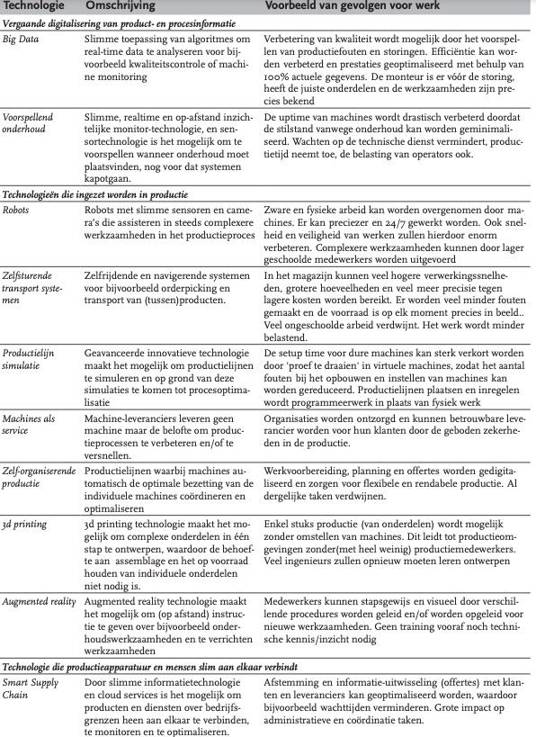Week 3 - smart research: processen
Voorbereiding
Tijdens mijn studie technische bedrijfskunde ben ik al vaak in aanraking gekomen met procesoptimalisatie. Zo heb ik meerdere projecten uitgevoerd om processen binnen industriële bedrijven te optimaliseren. Vaak ging dit over het reduceren van de doorlooptijd, omsteltijd en stilstand van de machines. Ook hebben wij veel colleges gekregen over het “Lean” maken van een organisatie en zijn thema’s als Quick Response Manufacturing (QRM) one-piece-flow productie, etc. bekend. Daarnaast heb ik nog mijn greenbelt certificaat behaalt tijdens mijn stage. Hierbij moest ik minimaal een bedrag van 10.000 euro besparen in een half jaar tijd. Ook heb ik nog extra vakken moeten volgen voor het behalen van dit certificaat.
Procesoptimalisatie
Voor procesoptimalisatie wordt door technisch bedrijfskundige vaak eerst breed gekeken naar het proces. Vervolgens wordt door kwalitatief onderzoek gekeken waar de grootste verspillingen zitten binnen een proces. Vaak wordt dit gedaan aan de hand van interviews met medewerkers uit verschillende lagen van de organisatie. Deze interviewvragen worden opgesteld aan de hand van de acht verspillingen van TIMWOODS:
Uiteindelijk wordt middels de interviews achterhaald welke soort verspilling het meeste aan orde is. Vervolgens kan er doorgevraagd worden met de 5-times-why methode om de grondoorzaak van het probleem te achterhalen. Dit probleem wordt dan zoveel mogelijk kwantitatief gemaakt door middel van data of metingen. Op deze manier kan het probleem in cijfers uitgedrukt worden en is de impact van het probleem beter zichtbaar. Vervolgens wordt gezocht naar ideeën en wordt in overleg met de belangrijkste stakeholders bepaald welke oplossing het beste is op het probleem te verhelpen. Tot slot wordt de oplossing geïmplementeerd en worden opnieuw de resultaten vergeleken met de oude situatie. Middels de PDCA-cyclus wordt vaak gekeken hoe de oplossing verloopt en of er bijgestuurd moet worden.
Gevonden artikelen procesoptimalisatie
Uit een onderzoek van Thomas Uhlemann, Cristian Lehmann en Rolf Steinhilper blijkt dat bedrijven eerst een geschikt geautomatiseerd productiesysteem moeten hebben voordat het verbeteringen door kan gaan voeren. Er dient een database opgesteld te worden waarbij overal in het bedrijf real-time data beschikbaar moet zijn en hier moet op geschakeld kunnen worden. Het gebruik van volledige data-acquisitie van procesdata (sleutelelement industrie 4.0), en bij kwantificering, evaluatie en analyse van verzamelde data, moeten tekortkomingen meteen worden vastgesteld. Ook is het op deze manier mogelijk om een digital twin te maken van het proces. (Uhlemann, Lehmann, & Steinhilper, 2017)
Ook worden technologieën als cloud computing, big data, additive manufacturing, artificial vision en augmented reality steeds belangrijker voor het verbeteren van processen en het waarde toevoegen aan producten. Met deze elementen kunnen kosten reductie worden gerealiseerd, tijdwinst worden behaald, fouten worden opgespoord en medewerkers op een slimme manier getraind worden. (Ibarra, Ganzarain, & Igartua, 2017)
Ook bevestigen andere artikelen dat Lean nog steeds een belangrijk begrip is voor procesoptimalisatie. Met dit thema heb ik heel mijn opleiding al gewerkt en hierdoor beschik ik al over de nodige kennis.
Risicomanagement
Bij risicomanagement wordt gekeken naar welke risico’s een bedreiging kunnen gaan vormen voor een bedrijf of project. Tijdens onze studie hebben we hier minder over uitgelegd gekregen. Wel is tijdens projecten gekeken welke risico’s het project of het bedrijf in de weg konden staan. Vaak werden de risico’s dan samen met de stakeholders beoordeeld door middel van een keuzematrix. De risico’s met de hoogste score waren de belangrijkste risico’s die meegenomen moesten worden tijdens het project.
gevonden artikelen
Een geaccepteerde strategie die essentieel is voor de beheersing van risico’s wordt risicomanagement genoemd. Onder dit worden alle activiteiten verstaan voor het controleren van risico’s. Met dit proces kunnen risico’s geïdentificeerd worden en hierdoor kunnen methodes toegepast worden om de risico’s te reduceren tot een acceptabel niveau. In werkelijkheid blijkt dat het bijna onmogelijk is om alle risico’s te elimineren, wel kunnen deze zoveel mogelijk gereduceerd worden. uiteindelijk dienen er drie stappen doorlopen te worden:
- Risico inschatting
- Risico reducering
- Toepassen en evaluatie
Risicomanagement bevat meer dan enkel deze drie stappen en het is een cyclish proces, zoals onderstaand figuur weergeeft. (Peters, 2017)
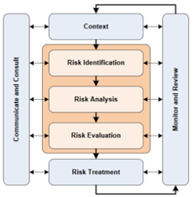
“Een belangrijk onderdeel van risicomanagement is het hebben van een doorlopend proces bestaande uit communiceren en consulten én monitoren en evalueren. Op dit moment wordt vaak wel geprobeerd risico’s goed te managen, maar gebeurt dit zelden systematisch.” (Tularam & Attili, 2012)
Weekopdracht week 3
Deze week dient er meer onderzoek gedaan te worden naar smart industrie in termen van Lean en Agile. Dit zijn twee belangrijke termen geworden binnen smart industrie en hierdoor is het belangrijk om verdieping te zoeken in deze termen. Tijdens mijn studie technische bedrijfskunde heb ik al veel kennis opgedaan met betrekking tot Lean. Tijdens mijn stage heb ik ook mijn Lean Six Sigma Greenbelt certificaat behaald. Over Agile heb ik minder kennis. Om tot goede wetenschappelijke inzichten te komen ben ik gaan zoeken naar artikelen op Google Scholar of Kaluga. Hierbij ben ik gaan zoeken op termen als:
Ook is hierbij gekeken naar de auteur en naar het jaartal van de bron. Enkel bronnen vanaf 2016 zijn meegenomen in dit artikel om op de hoogte te blijven van de actuele en toekomstige informatie over deze termen. Daarnaast is gekeken naar de auteur en de bronnen die zijn gebruikt in het verslag. Ook is gekeken van welke site de artikelen af komen. De meeste bronnen komen van de betrouwbare site Sciencedirect. Vaak hadden de auteurs die zijn gebruikt meerdere artikelen geschreven over deze thema’s en is het doel van de artikelen lezers van informatie voorzien van het belang van Lean en Agile. Onderstaand de resultaten van mijn onderzoek naar deze termen met betrekking tot smart industry.
Lean smart industry
Binnen industriële bedrijven wordt Lean production algemeen erkend en geaccepteerd. Lean production betreft een strikte integratie van mens en productieproces, continue verbetering en focus op waarde toevoegden activiteiten door verspillingen te elimineren of vermijden. Inmiddels is de vierde industriële revolutie opgedoken, genaamd industry 4.0. Deze revolutie maakt het mogelijk om een slim netwerk van machines, componenten, producten, individuen en ICT-systemen te creëren in de hele waardeketen om een slimme fabriek te realiseren. Lean maakt het mogelijk om deze slimme fabriek te stimuleren. De volgende onderdelen van Lean en industry 4.0 hebben betrekking op elkaar: (Mrugalska & Wyrwicka, 2017) (Sanders, Elangeswaran, & Wulfsberg, 2016)
Smart product
Kaizen dat onder andere de weg vrij maakt voor een Lean journey, kan smart products verzamelen en gebruiken voor analyse van informatie over herhalende acties van sensor- en semantische technologieën. Deze smart products hebben unieke eigenschappen zoals: Contextbewust, adaptief, zelfgeorganiseerd, proactief en het vermogen om de hele levenscyclus te ondersteunen, waardoor het een continue verbeterproces heeft. Bovendien maken de gegevens hiervan visualisatie van het productieproces en informatiestroom van productgroepen mogelijk. Op deze manier is het mogelijk om een current state map te creëren die verspilling in bepaalde processen aantoont en toekomstige strategische activiteiten toewijst om verspillingen te elimineren. Daarnaast kan een slim product kanban-informatie bevatten om controle van het productieproces te waarborgen. Dit is ook al gepresenteerd op de SmartFactoryKL op de Hannover Messe in Duitsland. (Mrugalska & Wyrwicka, 2017)
Smart machine
Een slimme machine kan een smart panel bevatten, bijvoorbeeld Advan panel 37. Dit maakt het mogelijk om kanban-kaarten in realtime te detecteren. Er zijn nog veel meer mogelijkheden met slimme machines. Het belangrijkste is dat smart machines gegevens verzamelen met technologieën als actuatoren, sensoren en videos. Deze realtime gegevens kunnen geanalyseerd en gebruikt worden voor betere operationele intelligentie te geven aan het proces en machines, maar ook voor het voorkomen van fouten wat het belangrijkste idee is van Poka Yoke. Tot slot maakt de toepassing van Plug’n’Produce het ook mogelijk om de Single Minute Exchange of Die-methode (SMED) in de hele productielijn te introduceren. (Mrugalska & Wyrwicka, 2017)
Augmented operator
De augmented operator moet ervoor zorgen dat de tijd tussen het optreden van een storing en het melden van een storing zoveel mogelijk verkort wordt. Om dit te kunnen realiseren, dient de Andon-methode te worden toegepast. Dit is een van de belangrijkste elementen van de Jidoka-kwaliteitscontrole, een belangrijk onderdeel van de Lean aanpak. Dit kan gerealiseerd worden door signaallichten te tonen op een smartwatch van een operator die in connectie staat met machines. Deze informatie gaat zowel over foutmeldingen als foutlocaties die optreden. Foutmeldingen worden geregistreerd in een database en worden geanalyseerd als continue verbeterprogramma om fouten op te sporen. Bovendien kunnen storingen worden gedetecteerd met juiste sensoren en automatische foutherstelacties verhelpen het probleem zonder menselijke hulp. (Mrugalska & Wyrwicka, 2017)
Lean-productie heeft ervoor gezorgd dat kwaliteitsproducten worden gerealiseerd gericht op klanttevredenheid. Hierbij wordt alles wat geen waarde toevoegt aan het product gezien als een verspilling. Lean kan het antwoord zijn op grote flexibiliteit van productiesystemen en processen om complexe producten succesvol te produceren. Om dit te realiseren is het nodig om IT-integratie van het productie- en planningsniveau te introduceren. De drie eerder genoemde voorbeelden hebben de koppeling tussen Lean en smart industry zichtbaar gemaakt door verschillende Lean production principes te koppelen aan nieuwe technologieën. Dit maakte het ook duidelijk dat Lean en smart industry elkaar kunnen ondersteunen. (Mrugalska & Wyrwicka, 2017) (Sanders, Elangeswaran, & Wulfsberg, 2016)
Bij grote bedrijven als ASML, VDL, Van der Lande, etc. wordt Lean als basis gebruikt voor de productie. Deze bedrijven geven ook interne cursussen om medewerkers de Lean denkmethode aan te leren en hierdoor zijn deze bedrijven ook zo succesvol. Binnen
Door deze twee wetenschappelijke bronnen heb ik goed kunnen onderbouwen dat Lean en smart industrie belangrijk voor elkaar kunnen zijn en ondersteuning bieden. Beide bronnen zijn ook nog redelijk actueel en hebben betrouwbare auteurs. Daarnaast gaf het ook duidelijk antwoord op mijn zoektermen en werd de informatie verkregen die nodig was. Ook was het doel van beide artikelen de lezer te informeren over de koppeling tussen smart industrie en Lean.
Agile smart industry
Met de Agile softwareontwikkelingsmethoden wordt gepoogd een antwoord te bieden op het bedrijfsleven dat vraagt om snellere en wendbare software processen. Dit is voornamelijk het geval bij de groeiende internetsoftware branche en mobiele applicatie omgeving. De SCRUM methode wordt vaak gebruik bij Agile, waarbij in korte sprints projecten en opdrachten worden uitgevoerd. Bij SCRUM wordt continue het resultaat besproken met de klant en kunnen aanpassingen tijdens het project nog verwerkt worden. Ook door de snelle vooruitgang van de industrie, technologie en toepassingen zijn veel nieuwe concepten ontstaan in de productie. Agile staat voor wendbaar, flexibel en lenig en is een manier van denken, werken en organiseren. Het wordt een steeds populairdere manier om in te spelen op de snel veranderende buitenwereld. Hierbij staat de klanttevredenheid voorop, met daarbij ook nog oog op het welzijn van werknemers en gezonde bedrijfsresultaten. (Faber, Mendez, Rehm, & Matthes, 2018) (Qin, Liu, & Grosvenor, 2016)
De vier kernwaarden van Agile zijn:
Agile stelt twaalf principes om tot succes te komen:
- Tevreden klant heeft prioriteit
- Verwelkom een flexibele scope
- Lever werkende onderdelen op in korte cycli
- Dagelijks multidisciplinair samenwerken
- Motiveer medewerkers, geef support en vertrouwen
- Face-to-face informatie overdracht
- Werken product als indicator van vooruitgang
- Constant innovatietempo
- Aandacht voor hoge kwaliteit
- Houd dingen waar mogelijk simpel
- Werk in zelforganiserende teams
- Reflecteer op de samenwerking
Twee jaar geleden zijn we met de studie technische bedrijfskunde gaan kijken bij het bedrijf Hoppenbrouwers B.V. in Berkel-Enschot, wat al jaren met Agile en Scrum werkt. Hierbij worden grote projecten opgedeeld in kleine stappen, waarbij wekelijks de voortgang en het resultaat besproken wordt met de klant. Dit bedrijf kan ook snel wijzigingen aanbrengen aan het project doordat het werkt met deze methoden.
Agile heeft zeker een relatie met smart industrie. In de snel veranderende wereld van de vierde industriële revolutie is het nodig om bij te blijven met de veranderingen en vaak complexe en klant specifieke klantwensen. Door de Agile methoden zijn bedrijven in staat om hier op in te spelen en wordt de klant altijd voorop gesteld.
Ik heb tot slot mijn opdracht laten reviewen door Derk. Hierbij kreeg ik de volgende opmerkingen en heb ik dit opnieuw verwerkt in me rapport.
Week 4 - smart research: Value proposition
In deze weekopdracht is meer onderzoek gedaan naar het co-design principe. Om meer kennis te vergaren over dit thema zijn twee YouTube video’s bekeken over dit onderwerp en verder is nog onderzoek gedaan naar wetenschappelijke bronnen. Bij de wetenschappelijke artikelen is gezocht op zoekmachines als Google Scholar en Kaluga. Hierbij zijn de volgende trefwoorden gebruikt:
Om alleen geschikte bronnen te onderzoeken is gekeken naar de volgende criteria:
In het verleden werden producten en services vaak enkel ontworpen door specialisten en individuen. Hierbij werd door deze specialisten vaak bepaald wat de (toekomstige) behoefte is van de consument. In de huidige tijd waar de mensheid in leeft, is het bijna niet meer mogelijk om deze aanpak te hanteren. Klanten worden steeds kritischer, er zijn meer mogelijkheden en de behoefte/smaakt verandert enorm snel. Hierbij komt het co-design principe om de hoek kijken. Co-design staat voor het gezamenlijk verkennen en ontwerpen van producten/services in multidisciplinaire teams om tot een geschikte oplossing te komen. (Blomkamp, 2018) (Barbera, Garcia, & Fuertes-Alp, 2017)
Deze methode van ontwerpen zorgt ervoor dat op een creatieve manier consumenten en belanghebbende betrokken worden bij het vinden van een oplossing voor complexe problemen of het ontwerpen van een product/service. Co-design wordt geprezen als een methoden om innovatieve ideeën te genereren en te zorgen dat beleid- en diensten aansluiten op de behoefte van de consumenten. (Vink, Wetter-Edman, & Edvardsson, 2016)
Co-design kan op verschillende vraagstukken worden toegepast. Zo wordt onderstaand in drie voorbeelden toegelicht wat het effect was van co-design op de processen.
Co-design met ouderen voor ontwikkeling van gezondheidszorgdiensten
In dit project in de gezondheidszorgsector was het doel om oudere mensen te helpen beter deel te nemen aan hun sociale netwerken. Met het co-design principe werd de leefstijl, dagelijkse bezigheden en capaciteiten van ouderen achterhaald om vervolgens een oplossing te vinden voor dit probleem. In de eerste fase van het proces zijn interviews afgenomen met personen tussen de 55 en 99 jaar oud om de informatie te vergaren van het dagelijks leven. In de tweede fasen is een deel van onderzochte groep gevraagd de dagelijkse routines op te schrijven gedurende vier weken. In de laatste fase is een deel van de groep uitgenodigd om deel te nemen aan de co-design workshop om te valideren of de gerapporteerde bevinden juist waren en om te identificeren op welke manier de ouderen graag ondersteund worden om deel te nemen aan sociale netwerken.
Door het co-design principe zijn de ouderen veel betrokken in het proces en kon een gepaste oplossing bedacht worden voor het sociaal netwerken van ouderen. Er werden nieuwe ideeën gegenereerd door ouderen, bestaande ideeën en informatie werd bevestigd en doordat ouderen onderdeel waren van dit proces werd de oplossing ook overtuigender voor de buitenwereld. Onderstaande figuur weergeeft een deel van het idee. (Steen , Manschot, & de Koning, 2011)

Co-design met kinderen om ideeën te genereren voor een nieuwe telecom service
In deze casus betreft het een telecommunicatiebedrijf dat opzoek was naar meer creativiteit en innovatie van de afdeling en het bedenken van een nieuwe business. Hierbij is het idee middels co-design kinderen te betrekken in dit proces van innovatie. Kinderen kunnen meer out-of-the-box denken dan volwassenen wat vaak resulteert in nieuwe ideeën. Deze kinderen moesten de huidige werknemers voorzien van meer creativiteit en inzichten om een nieuwe business te starten.
Er zijn drie workshop georganiseerd met 50 kinderen tussen de 7 en 10 jaar oud. Deze kinderen gingen samenwerken met een begeleider in groepen van vier personen. De kinderen mochten hierbij zelf ideeën gaan bedenken en dit mochten ze in elkaar knutselen. Vervolgens mocht het idee gepresenteerd worden door middel van een video opnamen. De acht beste ideeën zijn geselecteerd voor de oprichting van een nieuw bedrijf op korte termijn. Dit waren ideeën als een fotolijst voor videocommunicatie, apparaat om gezamenlijk muziek te maken vanaf verschillende locaties en een mobiele buddy-finder. Daarnaast zijn er ideeën gegenereerd voor lange termijn, zoals een draagbare translater, apparaat om dingen aan te raken op andere locaties, een kussen dat fijne dromen realiseert.
Het doel van het co-design project was geslaagd. Kinderen hadden goede ideeën bedacht die als innovatief en creatief beoordeeld werden. Ook hebben de medewerkers veel kunnen leren van de denkwijze van kinderen om nieuwe ideeën te bedenken. (Steen , Manschot, & de Koning, 2011)
Co-design met medewerkers om de logistieke service te verbeteren
In dit voorbeeld gaat het over het verbeteren van de klantenservice. Hiervoor is gebruik gemaakt van het co-design principe, waarbij medewerkers van verschillende afdelingen en roots betrokken waren. Daarnaast was het belangrijk dat verschillende medewerkers kennis gingen maken met het co-design principe voor toekomstige projecten. Om de klant ervaring te achterhalen is gebruik gemaakt van de Customer Journey methode.
Als eerste werden de klantervaringen achterhaald en werd gekeken hoe klanten bij het bedrijf terecht kwamen. Dit bleek echter moeilijker dan verwacht, omdat slechts een enkeling een overzicht had van de klantervaring. In samenwerking met meerdere service managers is een systeem ontwikkeld om de klant zijn ervaring te meten en data te verkrijgen.
Op basis van deze gegevens kon een nieuw ontwerp gemaakt worden om het klantenproces te verbeteren. De medewerkers moesten hetzelfde pad gaan belopen om te kijken wat een klant ervaart. Het gevolg hiervan is dat de medewerkers dezelfde emoties gaan voelen als de klanten, waardoor de urgentie hoger wordt om te gaan innoveren en verbeteren. Hierbij werd met het co-design principe een workshop georganiseerd met alle betrokkenen, van callcentermedewerkers tot productmanagers. In deze sessie is gezamenlijk een verbeterde Customer Journey ontworpen, die verder werd ontwikkeld in kleine werkgroepen. Deze oplossing biedt klanten een tool waarmee de klant makkelijk een postbus kan vinden. Uiteindelijk heeft deze oplossing geresulteerd in een verbeterde klanttevredenheid en werd het zelfs geadviseerd aan andere door middel van mond-tot-mondreclame. Daarnaast leerde het team met meerdere disciplines samen te werken, wat veel voordeel heeft voor de toekomst. (Steen , Manschot, & de Koning, 2011)
Uit deze voorbeelden is gebleken dat co-design een positieve invloed heeft op processen en dat het vele voordelen kent. De volgende voordelen zijn nog gevonden:
Co-design zal steeds belangrijker worden voor de toekomst en in de smart industrie. Het is makkelijker om klantwensen te achterhalen, door de klanten te betrekken in het proces. Daarnaast wordt in multidisciplinaire teams samengewerkt wat vaak resulteert in een betere oplossing.
Naast het opzoeken van informatie over co-design is een interview gehouden met een medestudent van de minor Smart Industrie, genaamd Emiel de Valk. Hierbij dient een interview afgenomen te worden om te kijken over welke kennis de medestudent al beschikt. Hierbij zijn de volgende twee vragen opgesteld:
Waarom is het co-design principe beter dan de oude manier van ontwerpen? Wat is het verschil precies en wat maakt co-design zo onderscheidend?
Wat het is het belang van co-design met betrekking tot smart industrie?
Tijdens dit interview heeft ook Emiel mij vragen gesteld om te achterhalen over welke kennis ik beschik met betrekking tot co-design. Het interview is onderstaand te beluisteren.
Week 5 - smart research: organisatie en keten
De opdracht voor deze week was onderzoek doen naar het platform business model. Om meer kennis te vergaren over dit thema is een artikel gelezen van IPPR over dit onderwerp en verder is nog onderzoek gedaan naar wetenschappelijke bronnen. Bij de wetenschappelijke artikelen is gezocht op zoekmachines als Google Scholar en Kaluga. Er is gebruik gemaakt van deskresearch. Hierbij zijn de volgende trefwoorden gebruikt:
Om alleen geschikte bronnen te onderzoeken is gekeken naar de volgende criteria:
Er zijn steeds meet verschillende business platforms te vinden binnen de nieuwe samenleving. De nieuwste technologische ontwikkelingen hebben de opkomst van nieuwe bedrijfsmodellen op basis van digitale platforms mogelijk gemaakt. Platforms zijn bedrijfsmodellen die bestemd zijn voor het samenbrengen van verschillende groepen. Google en Facebook zijn platforms bestemd voor het samenbrengen van adverteerders, bedrijven en dagelijkse gebruikers van social media. Uber brengt autorijders/chauffeurs in contact met mensen die een taxi nodig hebben. Amazon en Siemens bouwen platform infrastructuren die ten grondslag liggen aan de huidige economie en Airbnb en Booking brengen mensen in contact met accommodaties om te huren. Een essentieel punt is de centrale plaats van data die de basisbron vormen voor platformen en het een voorsprong kan geven op concurrenten. Deze platformen zijn ontworpen om deze gegevens de extraheren en te gebruiken. Dit wordt gedaan door de infrastructuur en bemiddeling tussen verschillende groepen te bieden, waarbij interacties tussen groepen gevolgd en geëxtraheerd kunnen worden. Deze positie is de bron van hun economische groei en politieke macht. (IPPR, 2017) (Täuscher & Sven M. Laudien, 2018) (Laine, Alhava, Peltokorpi, & Seppänen, 2017)
Gegevens en data zullen de centrale bron worden voor zowel technische als niet-technische sectoren in de economie. Het wordt belangrijk om deze informatie snel over te hevelen en samen te voegen. Platformen bieden een geschikte oplossing voor dit probleem. Zo kunnen diensten/producten verbetert worden door de grote hoeveelheid data die binnen komt. John Deere heeft een platform laten ontwikkelen dat boeren, zaadproducenten, tractoren, etc. met elkaar verbindt om diensten als zaai en oogstperiodes te verbeteren of slijtage van tractoren te minimaliseren. Hiermee heeft het bedrijf concurrentievoordeel behaald. (IPPR, 2017)
Toch hebben de veranderingen van business platforms schandelijke gevolgen. De drang naar steeds meer gegevens gaat ten koste van de privacy van gebruikers, wat kenmerkend is voor platformkapitalisme. Platforms willen steeds meer gegevens, wat resulteert in een drijfveer om de grenzen op te zoeken met betrekking tot privacy. Google is terechtgewezen voor het verzamelen van Wifi-gegevens, Facebook wordt bekritiseerd omdat het te ver in het leven van burgers duikt en Visio is aangeklaagd wegens het bespioneren van mensen via smart tv’s. Zolang data de centrale bron is en kapitalistische concurrentie een hoge premie hecht aan het verzamelen van data, blijft de toekomst gevuld met privacy schandalen. (IPPR, 2017)
Doordat grote bedrijven als Google, Amazon en Facebook zo hard aan het groeien zijn en blijven uitbreiden in nieuwe gebieden, wordt het steeds moeilijker voor startende ondernemers in dataextractie om succesvol te worden. Deze worden vaak meteen opgekocht door de eerder genoemde bedrijven. Zelfs grote bedrijven als Twitter, LinkedIn worden data-eetlust voor grote platforms. Het zegt genoeg dat Google investeert in niet gerelateerde ondernemingen zoals zelfrijdende auto’s of Internet of Things. Dit wordt enkel gedaan om nieuwe manieren te vinden om gegevens te extraheren. Naar verwachting zal de agressieve concurrentie tussen de grote platforms enkel blijven toenemen komende jaren en wordt het vrijwel onmogelijk voor nieuwe concurrenten om de markt te betreden. (IPPR, 2017)
Naast deze informatie is ook informatie verkregen via het kijken van een documentaire op Netflix. Deze documentaire genaamd social dilemma geeft meer informatie over hoe Google en Facebook de gevoelens van de mens probeert te beïnvloeden en hierop in te spelen. Hierbij vertellen oud medewerkers van Google en facebook hoe er misbruik wordt gemaakt van de gegevens die deze bedrijven over ons verkrijgen. Er wordt inzicht gegeven op welke manier bedrijven achter deze platformen de mensheid probeert te beïnvloeden. De hoeveelheid data die omgaat tijdens het gebruik van deze platformen wordt weer ingezet om gerelateerde reclames en berichten te koppelen aan gebruikers. Platformen proberen de gebruikers zo verslavend mogelijk te maken, zodat ze lang actief blijven op deze kanalen. Google en Facebook verkoopt de gebruikers aan adverteerders als verdienmodel en proberen ervoor te zorgen dat de gebruikers zo lang mogelijk actief blijven op deze platforms om meer geld te verdienen. (Orlowski, 2020)
Om een succesvol platform business model te realiseren zijn er een aantal basisregels:
Een groot onderdeel van smart industrie zijn technologische ontwikkelingen als big data en kunstmatige intelligentie. Bij platformen als Google en Facebook is terug te zien dat dit de belangrijkste succesfactoren zijn voor deze bedrijven. In de toekomst zal het platformkapitalisme enkel toenemen en wordt data voor deze bedrijven steeds belangrijker om de klant goed te kunnen voorzien en concurrentievoordeel te behalen.
Voor dit onderwerp heb ik een interview gehouden met Emiel de Valk om te achterhalen over welke kennis wij beschikken. Door middel van een soort kleine podcast wordt gediscussieerd over het onderwerp platform business model. Eerst hebben wij elkaars werk gereviewd en vervolgens zijn we hier vragen over gaan stellen.
Als feedback voor mijn stukken kreeg ik het volgende:
Ik vond dat Emiel gelijk had op het gebied van de bronnen en hierdoor heb ik nog extra bronnen gezocht die mijn artikel konden bevestigen en uitbreiden. Het interview is onderstaand weergeven.
Om tot een goede analyse te komen is gebruik gemaakt van een kwalitatieve analyse die beschrijft wat het platform business model precies inhoudt en wat de invloed hiervan is op de samenleving. De complexe informatie uit wetenschappelijke artikelen is hierdoor op een prettig leesbare manier beschreven.
Door middel van een interessant en fijn leesbaar artikel wordt de communicatie gelegd met mijn lezers. Daarnaast blijkt uit onderzoek dat de populariteit van podcasts afgelopen jaren enorm is gestegen en dit enkel blijft toenemen. Al 5,3 miljoen Nederlanders luistert inmiddels al naar podcasts en hierdoor vond ik dit ook een geschikte manier om het onderwerp business platform verder toe te lichten.
Week 6 - smart research: smart factories/working
In deze weekopdracht dient onderzoek gedaan te worden naar cultuur met betrekking tot smart industrie. Om deze opdracht te kunnen maken is een artikel gelezen over cultuurcreatie en daarnaast is verder onderzoek gedaan naar dit thema door middel van wetenschappelijk onderzoek. Er dient een instrument ontwikkeld te worden waarmee een organisatie inzicht kan krijgen in hoeverre de bedrijfscultuur voldoet aan de ambities op het vlak van smart industrie. Dit instrument kan later gebruikt worden om de cultuur van de stakeholders van het project te meten. Het bedrijf waar het project uitgevoerd gaat worden heet InsectSense. Tijdens de gesprekken met stakeholders zal achterhaald worden wat voor cultuur er heerst in de organisatie.
Bij de wetenschappelijke artikelen is gezocht op zoekmachines als Google Scholar en Kaluga. Er is gebruik gemaakt van deskresearch. Hierbij zijn de volgende trefwoorden gebruikt:
Om alleen geschikte bronnen te onderzoeken is gekeken naar de volgende criteria:
Het opbouwen van een vertrouwenscultuur in een organisatie kan een sterke manier zijn om de prestaties van een bedrijf te verbeteren. Onderzoek van neurowetenschap toont aan dat wrijvingen vermindert worden en de relatie tussen collega’s bevordert wordt. Hierdoor kunnen organisaties high performance teams met veel vertrouwen creëren. Het realiseren van een goede bedrijfscultuur is daarom ook een van de belangrijkste succesfactoren voor een organisatie. (zak, 2018)
De cultuur van een organisatie heeft invloed op het gedrag van medewerkers en de interacties tussen collega’s, wat weer invloed heeft op hoe efficiënt waarde gecreëerd wordt. Cultuur kan net als andere bedrijfsprocessen gemeten en verbeterd worden. Uit onderzoek is gebleken dat medewerkers verder willen gaan in hun rol als er een goede cultuur heerst in een organisatie. Ook blijkt dat vertrouwen tussen medewerkers resulteert in een efficiëntere werkwijze en medewerkers die goed kunnen samenwerken in teams. Dit alles resulteert in een hogere productiviteit en innovatieniveau. (zak, 2018)
Vertrouwen in een organisatie kan gemeten worden door middel van Oxytocin, een stofje dat vrijkomt in het brein en aanzet tot samenwerken. Helaas kan dit enkel gemeten worden door bloedafname, waar veel medewerkers niet aan zullen meewerken. Wel kan het door meerdere factoren toch nog meetbaar worden:

Deze acht componenten kunnen gebruikt worden om het vertrouwen en prestatieniveau te verbeteren. Zo blijkt uit een enquête dat door deze acht componenten de medewerkers meer energie hebben in het werk, zijn ze meer bezig met hun werk en gaat de productiviteit omhoog. Daarnaast neemt het aantal burn-out onder medewerkers verder af. Onderstaand figuur weergeeft de effecten van een goede cultuur in een organisatie. (zak, 2018)

Een ander artikel over organisatiecultuur in de financiële sector geeft aan dat er meerdere factoren zijn die de cultuur kan verbeteren. Organisaties waar medewerkers zich niet veilig voelen om wat uit te spreken, de top van het management het foute voorbeeld geeft en kritische vragen achterwegen blijven, brengt risico’s mee op het gedrag van medewerkers. Het kan resulteren in ontevredenheid en dat medewerkers met minder enthousiasme naar het werk gaan. Daarnaast kan het negatieve gevolgen hebben richting de klanten. Door het in kaart te brengen van elementen die de organisatiecultuur verbeteren, zijn bedrijven in staat om deze elementen te stimuleren en de risicovol gedrag te voorkomen. Deze bouwstenen hebben een positief effect op het ethisch gedrag van medewerkers, betere dienstverlening naar de klant en het verhoogt de prestaties van de onderneming. Dit maakt het voor ondernemingen aantrekkelijk omdat het vanuit zowel bedrijfsmatig perspectief als ethisch perspectief gunstig is. onderstaande afbeelding weergeeft de boutstenen voor een gezonde organisatiecultuur. (Christensen, 2018)

Evenwichtige besluitvorming
Wanneer er geen sprake is van evenwichtige besluitvorming kan dit leiden tot producten en diensten die niet leiden tot het belang van de klant. Zo kan het de klant en maatschappij een hoop problemen opleveren. Er dient een goede afweging gemaakt te worden over de belangen van de stakeholders, waar de klant een belangrijke van is. Door veel stakeholders te betrekken worden juiste beslissingen gemaakt waar het merendeel bij betrokken is. (Christensen, 2018)
Rechtvaardig belonen en waarderen
Het beloningsbeleid wordt gezien als een van de belangrijkste elementen in het creëren van een goede cultuur. Indien bedrijven medewerkers belonen door middel van salarisverhoging, bonussen, etc. kan het gedrag van medewerkers beïnvloeden. Dit kan zijn door targets te halen of goede handeling richting de klant. Als medewerkers ervaren dat onrechtvaardig beloond en gewaardeerd wordt kan dit resulteren in stress en afgunst. Deze bouwsteen kan simpel onderzocht worden door middel van vragenlijsten, interviews of de HR manager te informeren. (Christensen, 2018)
Leren van fouten
Binnen organisaties worden fouten vaak aangepakt, wat ten kosten gaat van het vertrouwen van de medewerkers. Het is belangrijk dat er geleerd wordt van fouten waardoor een open foutencultuur ontstaat. Hierbij worden fouten gecommuniceerd zodat alle medewerkers ervan kunnen leren. Medewerkers worden ook niet gestraft als er fouten worden gemaakt en durven dit in deze cultuur toe te geven. Vervolgend worden de fouten geanalyseerd en gecorrigeerd door het nemen van effectieve verbetermaatregelen. Dit draagt bij aan het lerend vermogen, ethisch gedrag, betere kwaliteit van dienstverlening en prestaties van een organisatie. Uit onderzoek is gebleken dat organisaties die open communiceren over fouten beter presteren. Het wordt binnen deze organisaties als “slim” gezien dat fouten worden toegegeven om zo de organisatie te verbeteren. (Christensen, 2018)
Om zelf de cultuur van een organisatie te meten kan gebruik worden gemaakt van de onderstaande tabellen.


Met deze bouwstenen krijgt een bedrijf beter inzicht in het gedrag en cultuur van de organisatie. Hierdoor kunnen potentiële risico’s eerder herkent en verkleint worden om problemen te voorkomen. Het heeft een positief effect op de organisatie en medewerkers waardoor een gezonder organisatiecultuur heerst in het bedrijf. (Christensen, 2018)
Binnen smart industrie is het belangrijk dat medewerkers open staan voor verandering door de snelle ontwikkelingen van technologie. Medewerkers binnen bedrijven moeten om kunnen gaan met veranderingen en open staan om te blijven leren. Het zou kunnen zijn dat medewerkers door middel van automatisering andere soort functies krijgen en hier moet een goede organisatiecultuur heersen om de medewerkers te blijven motiveren voor verandering. (Govert Gijsbers, 2016)
Competenties Smart Start
Smart industrie
De snel veranderende wereld van smart industrie kan veel invloed hebben op bedrijven. Nieuwe technologieën kunnen bedrijven efficiënter, sneller, duurzamer en innovatiever maken. Ook de klant stelt steeds hogere eisen en wil het liefst producten die “custom made” zijn gemaakt aan de hand van de klantwensen. In het eerder beschreven onderzoek zijn verschillende succesfactoren onderzocht die doorslaggevend kunnen zijn voor organisaties. Succesfactoren voor smart industrie zijn; verschillende denk- of werkwijze, bepaald cultuur die een organisatie heeft, verschillende methodes, nieuwe technieken, platforms, en processen. Ander factoren waren:
Door de nieuwste technieken toe te passen uit de vierde industriële revolutie zullen de kosten naar schatting met 30 tot 50 procent dalen. (linkmagazine, 2015)
Om deze factoren tastbaar te maken en bedrijven te kunnen beoordelen op het gebied van smart industrie wordt het gekoppeld aan verschillende meetniveaus. Onderstaande KPI’s zijn factoren waarmee smart manufacturing gemeten kan worden.
Carrying cost of inventory
Hierbij wordt gekeken naar de meest efficiënte manier van het houden van voorraad. Factoren die hier een rol in spelen zijn voorraadbeheer, kosten voor opslag, kosten van veroudering van voorraad en efficiëntie magazijnbeheer. Het wordt berekend middels de onderstaande formule: (Forbes, 2019)
Carrying cost of inventory=(Inventory holding sum)/(total value of inventory)*100
Inventory holding sum =inventory service cost+inventory risk cost+capital cost+storage cost
Het is belangrijk om met zo min mogelijk voorraad aan de klantwens te kunnen voldoen. Echter mag de flexibiliteit hier niet onder lijden en hierdoor moet gezocht worden naar een optimale voorraad. (Forbes, 2019)
Klant tevredenheid
Het is belangrijk om tevreden klanten te hebben, zodat de klanten terug blijven komen of andere adviseren om bij een bedrijf te kopen. De klanttevredenheid kan door de volgende KPI gemeten worden. (Forbes, 2019)
Klant tevredenheid=(Som van alle klantscores )/(totaal aantal beoordeling)
Leverbetrouwbaarheid=(aantal geleverde producten conform afspraak )/(aantal bestellingen)*100
Op deze manier kan gemeten worden of klanten tevreden zijn met een bedrijf wat een van de belangrijkste factoren is voor organisaties. (Forbes, 2019)
Demand forecasting accuracy
Hierbij wordt een synchronisatie uitgevoerd of de supply chain planning, inkoop en productie goed op elkaar zijn afgestemd om aan de vraag te kunnen voldoen. (Forbes, 2019)
Demand forcasting accuracy=(actual demand-forecasted demand )/(actual demand)*100
Fill rate effectiveness as a percent of all orders
Ook dit is een manier om te controleren of de processen goed op elkaar zijn afgestemd. Hierbij wordt gekeken hoe supply chains slimme fabrieken voorzien van materialen om orders af te ronden. (Forbes, 2019)
Fill rate effectiveness =(Total number of orders shipped )/(number of customer orders filled)*100
Gross contribution margins by product, production facility, and business unit
Dit is een maatstaf om financiële resultaten te zien van productiebeslissingen die gemaakt worden. Vaak wordt dit gebruikt bij het draaien van pilots in smart factories. (Forbes, 2019)
Contribution margin =(revenue from sales of an item-production costs for item)/(revenue from sales of the item)
Inventory turnover
Hiermee kunnen organisaties kijken hoe snel de voorraad verkocht wordt. Voorraad is een grote kostenpost en een risico. Hierdoor is het belangrijk om als organisatie met zo min mogelijk voorraad zo flexibel mogelijk te zijn. (Forbes, 2019)
Inventory turnover ratio =(cost of goods sold)/(average inventories)
Order cycle time
Met deze maatstaf kan een bedrijf inzicht krijgen in de tijd dat de klant een bestelling plaatst tot en met dat de klant de bestelling ontvangt. Dit is een van de belangrijkste maatstaven en het beste is om een zo kort mogelijke order cycle time te hebben. Goede voorbeelden zijn bijvoorbeeld Coolblue, waarbij “voor 10 uur besteld, morgen in huis” het thema is. (Forbes, 2019)
Order cycle time =(netto production time)/(number units produced)
Perfect order performance
Door middel van deze meetfactor is het mogelijk om inzicht te krijgen in hoeveel producten in een keer het gehele proces goed doorlopen. Deze score wil een bedrijf en haar klanten natuurlijk zo hoog mogelijk hebben. (Forbes, 2019)
(Percent of orders delivered on time) * (Percent of orders complete) * (Percent of orders damage free) * (Percent of orders with accurate documentation) * 100
De ware kracht van slimme fabrieken en ondernemingen is iedereen inzicht geven in de bijdragen die geleverd wordt aan de productie, verkoop, planning en onderhoud van producten. Ook dienen teams een gevoel van betekenis te krijgen en voortdurend te blijven streven naar verbetering van prestaties van het proces, de kwaliteit van producten en de klant tevredenheid. (Forbes, 2019)
De belangrijkste succesfactoren zijn naar mijn inzien een cultuur creëren waar ruimte is voor ideeën en ontwikkeling en blijven leren de standaard is. Iedere dag weer een stukje beter willen worden en op zoek gaan naar nieuwe technologieën die toepasbaar en van meerwaarde zijn in een bedrijf.
Beschrijft de mate van volwassenheid van een organisatie
Insectsense, het bedrijf waar wij een project uitvoeren, is een startup en hierdoor is het ook lastig om de volwassenheid van de organisatie te bepalen. Door middel van de strategy profiler van strategyandcoherence is het mogelijk om de volwassenheid van een organisatie te bepalen door middel van een vragenlijst. (Coherence, 2020) Onderstaande resultaat kwam eruit:
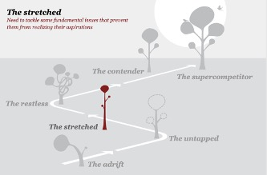
Het bedrijf is nog in een beginnende (growth) fase en heeft de doelen nog niet helemaal duidelijk. Er dient nog een duidelijke strategie uitgezet te worden en de organisatie moet nog richting krijgen. Momenteel wordt er voornamelijk nog onderzoek gedaan waarvoor bijengedrag allemaal gebruikt kan worden. Het bedrijf hecht veel waarde aan het onderzoeken welke rol het kan spelen in de medische industrie. Bijengedrag wordt door middel van slimme technieken aangeleerd om ziektes en explosieven te detecteren. Bijen hebben een veel nauwkeuriger reukvermogen dan de huidige machines en hierdoor is dit ook een gat in de markt. Met korte trainingen van 10 minuten is een bij al in staat om een bepaalde geur te detecteren. Deze detectie wordt opgenomen door middel van apparatuur en wordt voor klinisch gebruik ingezet. De onderscheidende manier van detectie is nog nergens anders in de wereld in gebruik en hierdoor heeft Insectsense een enorme groeipotentie. Wel worden in de medische industrie hoge eisen gesteld aan de nauwkeurigheid en betrouwbaarheid van detectie. Dit kan Insectsense momenteel nog niet garanderen en hier moet nog meer aandacht aan besteedt worden. Ook worden er nu nog bijna geen slimme technieken gebruikt die bij smart industrie terug komen. Het enige wat gebruikt wordt zijn sensoren om de reactie van de bijen te detecteren door middel van camera’s. Dit is ook een techniek die als “smart” bestempeld kan worden. In de toekomst zou het bedrijf gebruik kunnen maken van kunstmatige intelligentie/machine learning om de bijen te trainen en big data analyse om meer uit de gegevens te halen. Het is ook logisch dat het bedrijf nog niet zo ver is aangezien het pas net is opgericht.
Smart communication
Het spreekwoord “communicatie is key” is voor vele bedrijven en mensen een bekende term. Niet geheel onlogisch aangezien communicatie de belangrijkste factor is om elkaar te begrijpen en informatie door te spelen. Het belangrijkste in communicatie zijn de drie grote C’s (Schworks, 2018):
Daarnaast zijn er ook een aantal factoren die ervoor zorgen dat communicatie goed verloopt.
Gelijkwaardigheid
Zorg dat de ander gelijkwaardigheid voelt tijdens de communicatie. Indien de ontvanger van de communicatie zich minder voelt dan de afzender kan dit resulteren in agressiviteit, vijandigheid en negativiteit.
Doelstellingen
Het is belangrijk om de doelstelling van de communicatie helder te hebben. Zonder doelstelling valt ook niet te meten of de communicatie succesvol was. Bij de PDCA-cyclus zal dit terug komen.
Eerlijkheid
Het is ook belangrijk om eerlijk en transparant te zijn in communicatie om te weten wat er gevraagd wordt. Doe dit wel met beperkte mate en ga dit in negatieve zin niet te heftig aanpakken.
Win-win situatie
Zorg dat er bij de communicatie uitdaging zit en dat het de ontvanger aanspreekt. Het moet voor beide partijen interessant zijn anders komt de communicatie vaak niet aan bij de ontvanger.
Tijdens mijn minor ben ik mezelf ook gaan verbeteren op het gebied van communicatie. Deze minor stond in het teken van informatie delen en leren van elkaar. Hierdoor heb ik verschillende berichten op het forum geplaatst over relevante artikelen of documentaires die te maken hadden met smart industrie. Ook hebben wij een project wat in het Engels loopt, omdat de opdrachtgever alleen Engels spreekt. Dit bracht een extra uitdaging mee voor ons, want alles moest ook in het Engels gerapporteerd worden en vergaderingen waren in Engels. Tijdens de minor heb ik verschillende communicatiekanalen gebruikt om te communiceren met een doelgroep. Ik heb gebruik gemaakt van het forum, een persoonlijk blog, podcasts en vergaderingen. In het project hebben wij met de opdrachtgever besproken dat wij gebruik maken van Trello, een tool waarbij de opdrachtgever en de projectgroep inzicht heeft in de voortgang. Ook hebben we iedere keer een agenda opgesteld en het opgeleverde werk toegestuurd via onze gezamenlijke drive. Hierbij kregen we tijdens de vergadering feedback op die alleen maar positief was. De opdrachtgever vind dat we op een professionele manier rapporteren en de informatie was nuttig. Tot slot merkte wij dat de opdrachtgevers niet altijd bij de meeting aanwezig waren en hierdoor hebben wij aangegeven dat wij dit niet netjes vonden. Vanaf dat moment zijn ze altijd aanwezig geweest en verliepen de vergaderingen soepel. Door middel van de onderstaande PDCA cyclus hebben wij de communicatie geverifieerd.
Plan
Tijdens het scrum proces hadden wij sprints van twee weken. Op het begin van de sprint gingen wij middels Trello taken uitzetten die deze sprint afgemaakt moesten worden. Deze taken gingen wij dan bespreken met onze opdrachtgevers en projectbegeleider van de HAN. Vervolgens hebben de opdrachtgevers dit goedgekeurd en konden de taken verdeeld worden over de projectleden. Dit werd gedaan in overleg en er werd afgesproken dat de projectgenoten elkaar zouden helpen indien deze vastliepen op een onderwerp of taak. Iedere dag werd er door de projectgroep een daily standup georganiseerd op de voortgang te managen en te communiceren over de onderwerpen. Tot slot werd wekelijks een gesprek met de opdrachtgever gepland om te communiceren en discussiëren over de onderwerpen. Deze onderwerpen werden vooraf opgestuurd.
Do
Als project lid kon er begonnen worden aan de toegewezen taken. Vaak ging iedereen individueel op zoek naar relevante informatie voor het project. Iedere ochtend hadden wij om 10 uur een vergadering om de voortgang te bespreken. Hierbij vertelde wij elkaar wat we gevonden hadden over het onderwerp en welke relevatie dit heeft voor Insectsense. Indien een taak afgerond was, lieten wij dit controleren door elkaar om te controleren of het aansloot op het onderwerp. Vervolgens werd dit iedere vrijdag opgestuurd naar de opdrachtgever door middel van de PDF bestand en een agenda met de onderwerpen.
Check
Door het werk van elkaar te controleren en hierbij van feedback te voorzien, kwamen wij erachter of wij op de goede weg waren en de informatief relevant was. Ook hebben wij de opdrachtgever gevraagd om feedback voor het rapporteren en communiceren van de informatie naar hen. Door dit dagelijks/wekelijks te doen krijgen wij een beter ideeën wat er gevraagd wordt binnen een project en hoe de opdrachtgever wil dat er gecommuniceerd en gerapporteerd wordt.
Act
Iedere week hebben wij feedback gekregen van elkaar en van de opdrachtgever op het gebied van communiceren en rapporteren. Deze feedback wordt meegenomen in de volgende plan fase om een steeds betere communicatie te garanderen en streven naar perfectie.
Doelgroepen
Ook heb ik de manier van communiceren afgestemd op mijn stakeholders en doelgroep. Iedereen waar ik tijdens de minor mee communiceer is bezig met een HBO studie of heeft minimaal een HBO studie afgerond. Het is daarom van belang dat je op een zakelijke en professionele manier communiceert met hen tijdens vergaderingen en rapporteren. Alle opgeleverde stukken zijn zelfstandig leesbaar voor iedereen, alleen worden er wel vaktermen gebruikt die afgestemd zijn op de doelgroep waarvoor het bestemd is. Ik heb tijdens deze minor gebruik gemaakt van de volgende communicatiemethodes:
Podcasts
Door middel van twee podcasts heb ik verschillende onderwerpen besproken en gecommuniceerd naar mijn doelgroep (studenten & docenten). Podcasts zijn een leuke manier informatie te communiceren, Witek en medestudenten gaven dit ook als feedback.
Persoonlijke blog
Via mijn persoonlijk portfolio heb ik weekopdrachten gemaakt en informatie gedeeld. Hierbij heb ik gecommuniceerd door middel van rapporteren en voorbeelden te geven die ik heb meegemaakt. Op deze manier werd het interessant om te lezen door eigen praktijkvoorbeelden erbij te benoemen. Bij dit blog is rekening gehouden dat iedereen dit kan lezen, ongeacht opleidingsniveau. Ik kon dit dan ook met trots aan mijn vrienden en familie laten zien.
Onderzoeksrapport
Bij Insectsense hebben wij gecommuniceerd door zakelijke rapportage. Aan de hand van de gevonden informatie hebben wij een wetenschappelijk artikel geschreven die goed is bevallen bij de opdrachtgever. Als feedback kregen we terug dat dit professioneel aangepakt is en de informatief relevant was. Hierbij werd vaak in moeilijke vaktermen geschreven, omdat de opdrachtgever veel kennis had over deze onderwerpen.
Ik heb geleerd om op verschillende manieren te communiceren, afhankelijk van de doelgroep waarvoor het bestemd is.
Smart me
Doelen
Op het begin van deze minor heb ik verschillende doelen opgesteld. Zo wou ik graag meer leren van de programmeertaal, mezelf meer ontwikkelen in het delegeren van taken en kennis maken met de nieuwste technologieën van de vierde industriële revolutie. Om de doelen te bereiken zijn verschillende activiteiten opgesteld. Per onderdeel wordt dit onderstaand beschreven.
Toepassen en begrijpen van de programmeertaal
Het lijkt mij super interessant om zelf te kunnen programmeren, omdat dit in het voordeel kan werken bij het bedenken van “smart” oplossingen. Je zou hiermee bijvoorbeeld machines kunnen aansturen, apps en websites kunnen bouwen, etc. Het heeft dus echt veel voordelen als je deze taal begrijpt. Om dit te bereiken zal ik wel tijd moeten investeren om kennis op te doen over het programmeren. Dit zal ik gaan doen door wekelijks vijf uur te investeren in het kijken van filmpjes, lezen van artikelen, programmeren van een plant bewateringssysteem en voornamelijk te werken aan mijn eigen site. Door deze activiteiten uit te voeren zal ik over de basiskennis gaan beschikken van programmeren.
Uiteindelijk is het mij gelukt om de basis van programmeren te beheersen. Wel vond ik het achteraf minder interessant dan ik vooraf dacht. Vaak liep ik vast tijdens het programmeren of werkte het niet zoals gewenst. Desondanks ben ik toch blijven investeren in kennis en heb ik Derk om hulp gevraagd als ik er niet uit kwam. Ook heb ik Derk laten controleren of ik mijn codes juist zijn om te borgen dat ik op de juiste manier te werk ben gegaan. Het resultaat mag er dan ook wezen. Ik heb mijn eigen site geprogrammeerd en weet hoe de meeste functies werken. In de toekomst gaat mij dit zeker helpen als ik een oplossing moet bedenken waar programmeren een rol in speelt.
Delegeren van taken
Tijdens mijn studie technische bedrijfskunde ben ik erachter gekomen dat ik teveel taken op mij wil nemen en hierdoor te veel verantwoordelijkheid neem. Dit resulteert in een te hoge hoeveelheid onderhanden werk waardoor ik in tijdnood kom of niet de gewenste kwaliteit kan leveren. Hierdoor wil ik graag leren taken te delegeren of uit handen te geven. Dit ga ik doen door wekelijks de taken eerlijk te verdelen over mijn projectgroep, zodat iedereen dezelfde hoeveelheid werk toegewezen krijgt.
Door middel van Trello hebben wij met de groep wekelijkse taken aangemaakt en daaraan een tijd gekoppeld. Op deze manier had ik het overzicht wat de hoeveelheid onderhanden werk was voor die week. Ik ging dan de taken verdelen over onze projectgroep door iedereen evenveel taken te geven. Ook als er nog extra activiteiten bij kwamen heb ik deze verdeeld over onze projectgroep. Normaliter zou ik deze taken op mezelf pakken, maar dat heb ik niet gedaan. Het is succesvol geweest om tijdens deze minor te werken aan het delegeren van taken. Ik merk dat ik hier echt in gegroeid ben en dit zal in mijn voordeel gaan werken in de toekomst. Als feedback heb ik mijn projectgenoten gevraagd of zij ontwikkeling bij mij zagen om dit doel te bereiken. Van hen kreeg ik de feedback dat ik gedurende het project steeds beter het overzicht wist te behouden en de taken op een eerlijke manier verdeelde.
Kennis maken met de nieuwste technologieën
Ik ben altijd gedreven om nieuwe dingen te leren en al helemaal om toekomstige technologieën te leren kennen. Hierdoor wil ik tijdens deze minor kennis maken met de nieuwste technologieën die de vierde industriële revolutie kent. Om dit te kunnen bereiken zal ik wekelijks 2 uur besteden aan het onderzoeken van nieuwe technologieën. Dit ga ik doen door interessante documentaires te kijken, artikelen te lezen over nieuwe technologieën en de colleges te volgen.
Ook dit doel heb ik bereikt. Ik heb kennis gemaakt met programmeren, onderzoek gedaan naar de nieuwste technologieën m.b.t. 3D printing, kunstmatige intelligentie, machine learning, etc. Daarnaast hebben wij tijdens het project kennis gemaakt met een unieke manier van ziektes detecteren door middel van bijengedrag. Naar mijn inzien is dit een gat in de markt, omdat bijen binnen 10 minuten getraind kunnen worden om een geur kunnen detecteren.
Reflectie
Tijdens ons project hebben wij samen met onze groep een teamcharter gemaakt. Dit om te kijken waar ieders interesses liggen en sterktes en zwaktes. Op deze manier kunnen wij elkaar aanvullen en helpen. Onderstaand is mijn teamcharter te vinden.
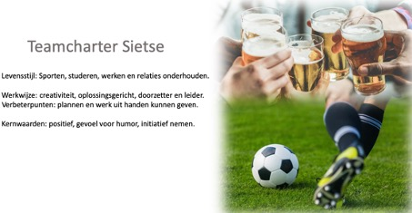
In deze Charter is te zien dat creativiteit, oplossingsgericht, positiviteit, doorzettingvermogen en leidende rol mijn sterke eigenschappen zijn waar ik over beschik. Daarnaast beschik ik zoals bijna ieder persoon over verbeterpunten waar ik nog aan moet gaan werken. Zoals eerder beschreven gaat dit voornamelijk om het plannen en het uit handen kunnen geven van werk. Deze "zwakke" punten zal ik moeten verbeteren, omdat ik volgend jaar aan de master Innovation Management wil gaan starten waarbij plannen een grote rol speelt. Als ik deze punten kan verbeteren weet ik zeker dat ik kan uitgroeien naar mijn doel: een hoge managementfunctie, waarbij ik bepalend kan zijn, binnen een internationale organisatie.
Met onze projectgroep hebben wij gekozen voor drie studenten met verschillende achtergronden op het gebied van persoonlijkheid en studie. Dit om van elkaar te leren en te werken aan onze doelen nastreven. Met de projectgroep hebben wij ook een teamcharter ingevuld die onze groep beschrijft, deze is onderstaand weergeven.
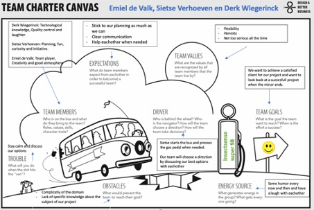
Mijn verbterenpunten heb ik met Derk en Emiel besproken. Hierdoor heb ik in overleg met hen de rol van SCRUM-master op mezelf genomen. Dit wil zeggen dat ik tijdens het project moest regelen dat het project op een goede manier wordt gemanged. Ik heb besloten iedere dag om 10 uur bij elkaar te komen in een online meeting om te kijken of iedereen er uitkomt met zijn taken. Indien dit niet het geval was kon een van de andere projectgenoten helpen om te zorgen dat we op de gewenste tijd de activiteiten afgerond hadden. Door SCRUM-master te zijn binnen het project heb ik geleerd beter te plannen en werk uit handen te geven als het teveel was of ik er zelf niet uit kwam. Daarnaast heeft de SCRUM-methode mij geholopen om op een flexibele manier een project te managen en in te plannen in korte sprints. In het vervolg van mijn cariérre zal ik hier zeker meer gebruik van maken.
Actie op goede punten te versterken
Ik heb voor het actiepunt “do the things you are good at” gekozen, omdat ik dit het belangrijkste vind in mijn leven: dingen doen die ik leuk vind en waar ik goed in ben. Ik merk dat ik hier enorm veel energie en motivatie van krijg en dit gaat mij helpen om veel plezier te hebben in mijn dagelijkse activiteiten. Om dit te versterken zal ik dus op zoek moeten gaan naar dingen die ik leuk vindt. Zo ga ik op een rijtje zetten wat ik allemaal leuk vind en waar ik energie van krijg. De volgende punten heb ik opgeschreven:
Ook ga ik bewuste keuzes maken om zoveel mogelijk dingen te doen die ik leuk vind. Activiteiten die ik minder leuk vind ga ik proberen te ontwijken of hierbij vraag ik om hulp van anderen. Zo heb ik lang zitten twijfelen of ik de master operations management & logistics (OML) ga volgen of de master innovation management. Nu zal ik met de master OML meer gaan verdienen en dit is een betere master, maar hierbij gaat het veel om wiskundige modellen te bouwen voor verbetering van processen. Wiskunde is echt iets wat mij niet aantrekt en hierdoor ga ik ook kiezen voor de master innovation management. Ik krijg veel energie van innovatie en samen aan successen te werken. Deze master zal ik dan ook met alle plezier volgen en dan ben ik ook minder beroerd om er veel tijd in te steken.
Actie om slechte dingen weg te nemen
Hierbij heb ik gekozen voor het punt “online online working”, omdat dit vaak ten kosten ging van mijn werkhouding en motivatie. Ik vind het fijn om onder de mensen te zijn en te discussiëren met anderen. In het vervolg zal ik een goede balans willen vinden in het online en fysiek werken. Dit ga ik doen om minimaal twee keer per week fysiek aan een project te werken en de rest van de tijd online. Het geeft mij energie om andere te zien en te luisteren naar de ideeën van hen.
Portfolio Smart business
Week 1 Smart business: smart working
De voorbereiding voor deze les was het opstellen van vragen die ik aan medestudenten kan stellen. Op deze manier wordt achterhaald wat medestudenten verwachten te gaan leren tijdens deze minor en wat de waarde van hen gaat zijn. De volgende vragen zijn opgesteld:
Door middel van het value proposition canvas (VPC) is duidelijk gemaakt wat de minor moet gaan brengen. Onderstaand is de VPC weergeven.

Aan de rechterkant staat beschreven wat de minor moet gaan brengen en wat nodig is voor de minor. De linkerkant beschrijft hoe de minor gerealiseerd gaat worden en welke producten/service ervoor zorgt dat de customer jobs behaald gaan worden.
Week 2 Smart business: smart products klant
In deze week wordt de kennis vergroot op het gebied van Business Model Canvas (BMC), design thinking, veranderplan en businesscase.
Voorbereiding
Het Internet of Things (IoT) is het dagelijkse leven van consumenten binnen gedrongen en heeft al bedrijfsmodellen in verschillende sectoren getransformeerd. Deze technologische ontwikkeling biedt kansen voor verzekeraars. Door het IoT worden verzekeraars in staat gesteld om nieuwe producten te ontwikkelen, nieuwe distributiekanalen te openen en hun rol uit te breiden met voorspellingen, preventie en assistentie. Bijna alle apparaten zullen verbonden zijn door de veranderingen van het IoT. In 2010 waren er 12,5 miljard apparaten opgenomen in het IoT. De verwachting is dat dit aantal in 2025 opgelopen is tot 50 miljard apparaten die verbonden zijn (mckinsey, 2019). Deze apparaten kunnen enorme hoeveelheden aan data en gegevens overdragen aan leveranciers of derden.

Tot nu toe hebben verzekeraars IoT mogelijkheden om interactie met klanten te ondersteunen en acceptatie en claimverwerkingen te versnellen/vereenvoudigen. Echter ontstaan er steeds meer IoT servicemodellen die interessant zijn voor verzekeraars. Zo zouden ze kunnen samenwerken met bedrijven om nieuwe of verbeterde producten en diensten te kunnen leveren die gebruik maken van ITS-technologieën en nieuwe ecosystemen. Hierdoor kan aanvullende business worden gegenereerd:
Verzekeraars kunnen door IoT technologieën steeds nauwkeuriger de risico’s bepalen. Autoverzekeringen kijken naar factoren als leeftijd, adres, krediet, etc. bij het vaststellen van premies. Door IoT komen er nieuwe factoren bij kijken die gebruikt kunnen worden door verzekeraars. Hierbij kan zelfs inzicht verkregen worden in de rijstijl van een vervoerder. Factoren als snelheid, welk dagdeel gereden wordt, etc. om een beter inzicht te krijgen in de verzekerde.

Door de hoeveelheid data die verkrijgbaar is door slimme apparaten kunnen verzekeraars beter inzicht krijgen in de klanten en hoe de apparaten gebruikt worden. Hierdoor kunnen kostenreducties gerealiseerd worden en nieuwe businessmodellen op afgestemd worden.

Weekopdracht AXA
Tijdens dit college was er een gastspreken van het bedrijf Informed. Dit bedrijf had een klant genaamd AXA waar het financieel niet zo goed ging met de WA-verzekeringen. Tijdens deze les hebben wij een casus gekregen van dit bedrijf en dit mochten wij in groepen van vijf personen uitwerken. Om te beginnen is een Business Model Canvas (BMC) opgesteld om het bedrijf beter in kaart te brengen. Onderstaand is het huidige BMC weergeven van AXA.

In de casus werd verteld dat het bedrijf verlies maakt op de WA-verzekeringen. De reden hiervan was dat de overheid een maximum stelt op premies, er vaak fraude wordt gepleegd en dat het lastig te beoordelen is hoe iemand anders rijgedrag is. Er werd gevraagd een oplossing te bedenken, zodat de WA-verzekeringen weer interessant worden om te verkopen. Door een creatieve brainstrom sessie zijn de verschillende ideeën gegenereerd. Hierbij zijn de volgende twee oplossingen bedacht:
Nieuwe BMC
Het BMC zal niet drastisch veel veranderen op het gebied van de bouwstenen. Wel komen er een aantal nieuwe kostenposten bij voor de app en database om fraude te bestrijden en de apparaten die aangebracht moeten worden onder de auto’s van de verzekerde. Wel zullen de kosten structuur en inkomstenbronnen er anders uit gaan zien. Zo zullen de kosten van schadevergoedingen gaan dalen, omdat het bedrijf zoveel mogelijk verzekerde krijgt met goed rijgedrag. Wel zullen er ook veel klanten weg gaan bij AXA, doordat de premie hoog wordt bij asociaal rijgedrag. Echter kosten deze klanten AXA alleen maar geld en is het niet erg dat deze niet behouden worden.
Veranderplan
De organisatie van AXA zal er wel anders uit gaan zien na de implementatie van oplossing 1. Het bedrijf zal partners moeten vinden die deze beacons kan maken en plaatsen. Daarnaast geven klanten een deel van hun privacy weg bij het laten aanbrengen van deze beacon. Ook dit dient goed uitgezocht te worden voordat het bedrijf hiermee in de problemen kan gaan komen. Tot slot zullen functies gaan veranderen of komen er vacatures vrij voor data analisten. Het gaat belangrijk worden dat de data wordt geanalyseerd en terug gekoppeld wordt naar de klant, zodat deze een eerlijk prijs betaald voor de verzekering. Klanten met roekeloos rijgedrag zullen een hoge premie betalen en hiermee gaat het bedrijf in gesprek. AXA kan zo zelf gaan selecteren welke klanten het verbonden wil houden en van welke klanten het afscheid moet nemen.
Businesscase
Door middel van een businesscase zal de oplossing uitgewerkt worden. Op deze manier kan AXA zien of het financieel interessant is. Afgelopen jaar had AXA een omzet van iets meer dan 100 miljard euro.

In dit businessplan wordt uitgegaan dat de WA-verzekeringen 10% van deze omzet op zich neemt. Dit komt neer op ongeveer 10 miljard euro. Onderstaand wordt de huidige situatie in kaart gebracht en worden drie mogelijke scenario’s bepaald. Door ervoor te zorgen dat de klanten van AXA goed rijgedrag vertonen, zullen er minder ongelukken gebeuren en worden minder schadeclaims ingediend. Op deze manier wordt het voor AXA weer interessant om WA-verzekeringen te verkopen. Verwacht is dat er weer 1 miljard wordt verdiend op deze verzekeringen.

Week 4 smart business: smart factories organisaties
In deze week heeft een gastspreker, Paul Kalis, een gastcollege gegeven over transities binnen organisaties. Hierbij ging het voornamelijk over het samenwerken in de keten en het beïnvloeden van stakeholders.
Voorbereiding
Ter voorbereiding voor deze workshop hebben wij een Business Model Canvas (BMC) opgesteld van Insectsense. Op deze manier is het mogelijk een organisatie in kaart te brengen en te analyseren.
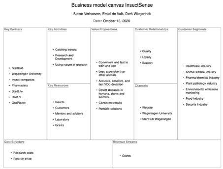
Tijdens het college heeft de projectgroep de opdracht gekregen om de innovatie van een organisatie te onderzoeken. In ons geval was het de innovatie van Insectsense en dit duidelijk maken in een BMC. Daarnaast is kennis gemaakt met het operation model (TOM) en Insectsense is ook beschreven aan hand van de elementen van dit model (Mens, Machine, Methode) op drie verschillende niveaus (strategisch, tactisch, operationeel).
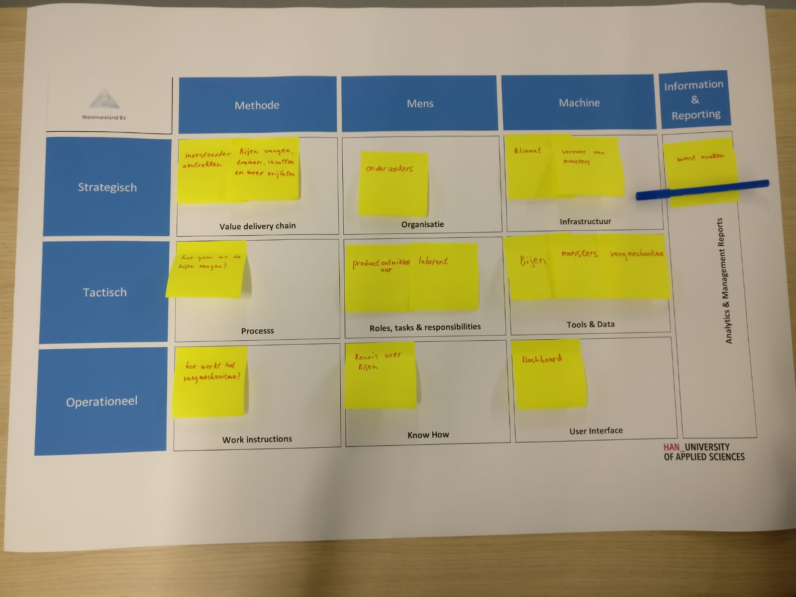
In dit college heb ik geleerd hoe innovaties, kansen- en bedreigingen en organisaties in kaart gebracht kunnen worden. Ik vind innoveren enorm interessant en hierdoor ga ik in het verloop van mijn carrière gebruik maken van de kennis die ik heb opgedaan tijdens deze workshop. Het meest interessante aan innoveren is dat het vaak resultaat geeft van de verbetering en ik kan mijn creativiteit hierop loslaten. Een succesvolle innovatie geeft mij veel energie en hier wordt ik ook vrolijk van. Na mijn studie technische bedrijfskunde wil ik de master innovation management gaan volgen op de TUE. Tijdens het project hebben wij veel aan productinnovatie gedaan. Wij hebben een prototype gemaakt voor Insectsense om bijen te vangen. Tijdens dit proces zijn wij begonnen met een protoype van karton en deze hebben wij steeds verder verbeterd tot een portable "beecatcher" van PVC. Er is tijdens het ontwerpen van dit product gewerkt volgens de design thinking methode. In samenspraak met de opdrachtgever is het product steeds verder naar de wensen geïnoveerd. Het proces is terug te vinden in het tabblad smart project.
Week 5 smart business: smart manufacturing processen
Voorbereiding
Als voorbereiding voor deze week hebben wij een wetenschappelijk artikel moeten lezen over productietechnieken en Lean. Hierbij dient in eigen woorden uitgelegd te worden wat de volgende parameters van Lean inhouden:
Flow
Bij flow gaat het om het geleidelijk laten doorstromen van producten door het productieproces. Hierbij dienen de verspillingen uit het proces te worden geëlimineerd en wordt er zoveel mogelijk waarde toegevoegd. Het liefst wordt een one-piece-flow productie gehanteerd, waarbij met bijna geen voorraad wordt gewerkt. Ook Total Quality Management (TQM) heeft een belangrijk rol hierin. Door fouten meteen te detecteren en niet in grote batches te produceren, wordt er niet onnodig veel uitval geregistreerd. Met flow is het makkelijker om flexibel te produceren en wordt de doorlooptijd verkort, waardoor klanten eerder producten krijgen.
Customer
Hierbij gaat het om de klant altijd centraal te stellen. Hoe kan er zoveel mogelijk waarde worden toegevoegd voor de klant. Voor welke stappen in het proces wil de klant betalen. Het is hierdoor heel belangrijk om goed te weten wat de klant nou echt wil. Een klant wil bijvoorbeeld niet betalen voor een magazijnmedewerker die spullen rond rijdt, maar wel voor iemand die een bewerking aan het uitvoeren is aan een product.
Proces
Het bestaande proces dient eerste in kaart gebracht te worden voordat toegevoegde waarde gedefinieerd kan worden. Dit kan ik kaart gebracht worden door middel van een Value Stream Map (VSM). Bij deze VSM worden alle activiteiten gemeten en wordt gekeken hoe lang een product in het proces zit. Door dit in kaart te brengen wordt overzichtelijk welke activiteiten waarde toevoegen en welke niet. Door de niet waarde toevoegende activiteiten te elimineren komt er meer flow in het proces. In het proces wil je als bedrijf het liefst alleen maar produceren op klantvraag met zo weinig mogelijk voorraad. Dit wordt ook wel “Pull” productie genoemd.
Supplier
Ook de leverancier speelt een belangrijke rol bij het Lean produceren. Bedrijven willen het liefst zo min mogelijk voorraad en flexibele lever voorwaarden. Een methode dat dit kan realiseren wordt het Just-In-Time principe genoemd. Leveringen komen dan op het juiste moment op de juiste plek aan, waarbij dus bijna geen voorraad nodig is. Ook wordt dit in het proces zoveel mogelijk toegepast.
Workforce
Hierbij gaat het om het toepassen van Lean-principes om het personeelsbeheer te verbeteren. Het gaat hierbij om medewerkers zo breed te scholen dat deze op meerdere plekken inzetbaar zijn. Hiermee kan de hoeveelheid werk op een eenvoudige manier opgevangen worden. Dit heeft een positief resultaat op de flexibiliteit van een organisatie.
Helaas kon het gastcollege van deze week niet doorgaan i.v.m. de coronamaatregelen. De thema's die behandelt zouden worden zijn voor mij al bekend, omdat ik hier al vaak mee heb moeten werken tijdens mijn eigen studie. Hierbij heb ik vakken gekregen als continue verbeteren, waar veel Lean elementen in terug kwamen. Het gaat eigenlijk voornamelijk over het elimineren van verspillingen en het verbeteren/vereenvoudigen van processen. Daarnaast heb ik heb tijdens mijn stage van vorig jaar mijn Lean Six Sigma greenbelt certificaat behaald. Hiervoor moest ik met mijn oplossing een besparing van 10.000 euro realiseren en daarnaast extra vakken volgen over Anova, Shi Square en andere onderwerpen m.b.t. Lean. Ook hebben wij tijdens ons project van Insectsense gebruik gemaakt van de Scrum methodiek. Het werkte super fijn om het project op te splitsen in korte sprints, omdat het dan makkelijker is om taken te verdelen en tussenresultaten op kunt leveren bij de opdrachtgever. De opdrachtgever had zelf ook inzicht in waar wij mee bezig waren en hij heeft aangegeven dat hij dit heel fijn en overzichtelijk vindt.
Week 6 smart business: smart workig keten
In deze week is een test gemaakt om te kijken wat mijn visie is op verandering. Door middel van de kleurentest is de volgende score naar voren gekomen:
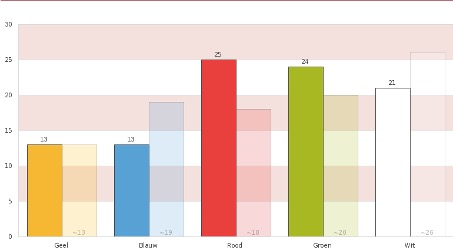
De gekleurde balken zijn de uitslag van mijn score en de lichtgekleurde balken zijn het gemiddelde van de respondenten.
Rood
Dit is mijn hoogste score en hierbij draait het om motivatie van mensen. Het gedrag, ambities en talenten van mensen zijn bepalend en hier kan sturing aan gegeven worden door te motiveren. Hierbij wordt gezocht naar een optimale “fit” tussen de organisatie en de medewerkers, zodat beide partijen er voordeel uit halen. Deze manier van verandering is zorgvuldig, gevoelig voor sfeer en houdt van de mensen, waar ik mezelf in terug kan vinden.
Groen
Mijn tweede hoogste score omschrijft dat ik leren en veranderen als eenzelfde traject zie. Hierbij geloof ik dat organisaties zich door ontwikkelen, wanneer de medewerkers dit ook doen. Het gaat hierbij om de ontwikkeling van medewerkers en de organisatie door middel van experimenteren/ontdekken en reflecteren. Als groene veranderaar streef ik naar een lerende organisatie waarbij medewerkers gefaciliteerd en ondersteund worden.
Wit
Bij deze eigenschap wordt uitgegaan dat alles autonoom verandert. Hierbij geloofd de veranderaar in zelforganiserende vermogens van organisaties en de medewerkers. Deze veranderaars proberen kansen te pakken en obstakels uit de weg te ruimen.
Blauw
Hierbij ben je geneigd veranderingen rationeel te bedenken, ontwerpen en te realiseren. Onderzoek wordt gebruikt om de beste uitkomst te vinden en plant de verandering zorgvuldig in. Deze veranderaar plant, stuurt, denkt analytisch en werkt ordelijk.
Geel
Deze veranderaar denkt in termen van belangen, conflicten en macht. Bij deze verandering ga je op zoek naar een win-win situatie met de belangrijkste spelers. Vaak worden mensen in het lagere segment niet meegenomen.
Ik kan me zeker wel vinden in deze uitslag. Iedereen kan een goede inbreng hebben bij verandering ongeacht opleidingsniveau of ervaring. De belangrijkste factoren van verandering vind ik motivatie, draagvlak en samen successen vieren.
Onze projectorganisatie InsectSense is een startende onderneming waar nog bijna geen informatie over te vinden is. Wel staat het bedrijf voor natuurlijke oplossingen door middel van onderzoek met insecten. Hierbij staan ze open om dit in verschillende branches toe te passen. Ik denk dat dit bedrijf het meeste in groen en rood verandert. Het bedrijf vind het belangrijk om gepassioneerde belanghebbende in en rondom het bedrijf te hebben die gemotiveerd zijn en willen gaan voor ontwikkeling van de organisatie en producten. Hierdoor heb ik dit bedrijf ook opgegeven als eerste keus voor het project. Er wordt gevraagd voor gemotiveerde studenten die het bedrijf verder kunnen helpen en dit past dan ook bij onze projectgroep. Wij zijn drie creatieve studenten die vol motivatie zitten om dit project aan te gaan en het bedrijf verder te laten ontwikkelen.
Workshop
Deze week hebben wij ook een masterclass "Master your mind & own life" van Ilke Oner gekregen. Dit was een enorm interessante workshop om je hersensen te laten werken zoals jij dat wil. Ook hebben wij hiet uitleg gekregen hoe anderen op een positieve manier beïnvloed kunnen worden. Deze kennis zal mij in het verloop van mijn carriere helpen om mijn hersenen te laten functioneren zoals ik dat wil. Ook zal deze masterclass helpen om andere mensen met mij mee te krijgen. Tijdens het project hebben ik de kennis toegepast door tijdens de vergaderingen op te letten wat de opdrachtgever voor gedrag vertoont. Vervolgens ben ik zijn gedrag tijdens de meetings proberen over te nemen, waardoor wij elkaar beter gingen begrijpen en hierdoor de gesprekken soepeler verliepen.
Ontwerpt bedrijfsprocessen volgens smart industry criteria
Insectsense is een startup en is nog vol bezig met de ontwikkeling van het bedrijf en de processen. Hierdoor is het ook lastig om een bedrijfsproces te ontwerpen voor onze organisatie. In het onderstaande processchema zijn de hoofdactiviteiten terug te vinden van Insectsense.
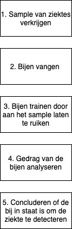
Uiteraard heeft het project van de projectgroep van de minor smart industrie invloed gehad op de bedrijfsprocessen van Insectsense. Aan de hand van de volgende drie factoren wordt de impact van het project op Insectsense beschreven:
Methode
Door middel van het onderzoek zijn verschillende methodes naar voren gekomen waarmee bijen ziektes kunnen detecteren. Het ging hierbij om reukvermogen en Volatile Organic Compounds (VOCs) waarmee biosensor van een ziekte gedetecteerd kan worden. Deze VOCs kunnen in verschillende samples terug gevonden worden zoals bloed, urine, zweet, adem, etc. Er zijn dus vele manieren om nieuwe ziektes te detecteren door middel van verschillende methodes. Met deze nieuwe inzichten is het voor Insectsense mogelijk om op andere manieren ziektes te detecteren.
Daarnaast hebben wij met de projectgroep een prototype ontworpen en gerealiseerd om de bijen te vangen. Voorheen werd dit gedaan met een net of bakje waar ze ingezet moesten worden voordat het gebruikt kon worden. Wij hebben een apparaat ontworpen die bijen op kan zuigen en deze bijen automatisch in een container komen die afsluitbaar is. Het is veel diervriendelijker en makkelijker om de bijen te vangen met dit apparaat. Daarnaast bespaart het Insectsense een hoop tijd en moeite door dit nieuwe apparaat.
Mens
Aan dit punt verandert er nauwelijks iets door onze oplossing van het project. Er blijven mensen nodig die de Bijen moeten vangen en trainen. Wel zijn er veel meer ziektes te detecteren, waardoor meerdere mensen baat kunnen hebben bij deze verandering.
Machine
De machines voor testen blijven nagenoeg hetzelfde. Er zal door middel van slimme camera’s gemonitord worden of bijen een bepaalde reactie geven op een stof. Wel verandert het apparaat om bijen te vangen door onze “beecatcher”. Het maakt het vele malen makkelijker om bijen op een snelle en diervriendelijke manier te vangen.
Beschrijft de implicaties voor het gehele business model en voor de positie van de organisatie in de keten
Doordat Insectsense nog een startup was en nog geen website had was het enorm moeilijk om informatie te verkrijgen van het bedrijf. Daarnaast konden wij niet bij het bedrijf op bezoek komen en moest er online informatie uitgewisseld worden. Toch is het goed gelukt om het bedrijf in kaar te brengen door middel van een Business Model Canvas (BMC). Dit was een handige manier op de organisatie zo goed mogelijk in kaart te brengen en te achterhalen welke toegevoegde waarde het bedrijf levert. Deze BMC is in de weekopdrachten van smart business terug te vinden. Het bedrijf is pas net gestart, levert nog geen diensten/producten en bevindt zicht hierdoor nog in de introduction fase. Het bedrijf heeft nog geen vaste klanten, maar kan wel een grote rol gaan spelen in de beveiliging- en gezondheidsindustrie. Ook heeft het nauwelijks toeleveranciers, maar enkel wat partners. De bijen worden gevangen bij het Bijenhuis in Wageningen en het trainen en uitvoeren van testen voor detectie wordt gedaan bij de universiteit van Wageningen. Indien Insectsense daadwerkelijk al testen gaat uivoeren voor bijvoorbeeld Corona dan zouden klanten de getrainde bijen door middel van adem corona kunnen laten detecteren. Het proces zou er dan nagenoeg hetzelfde uitzien als de sneltest corona straten.
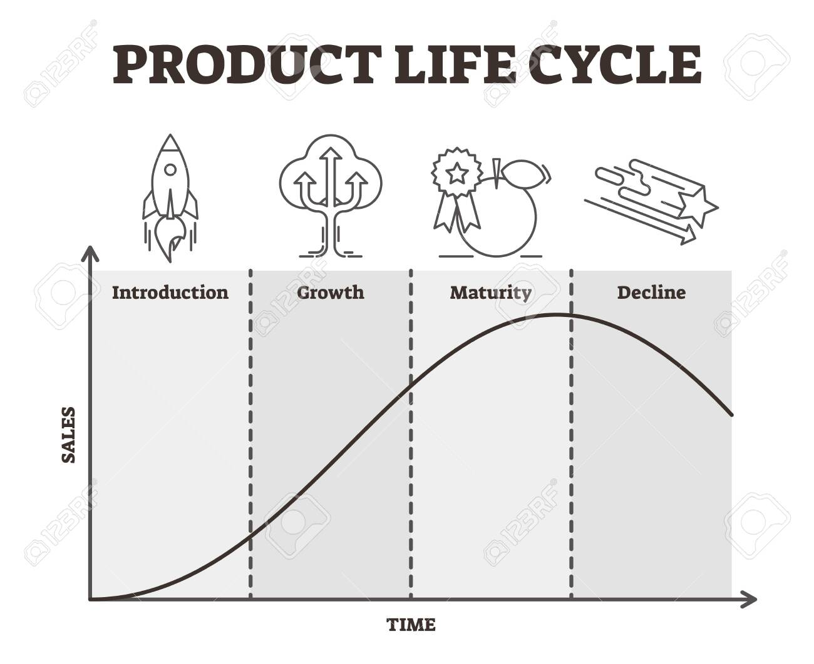
Tijdens het project zijn nieuwe inzichten verkregen van ziektes die detecteerbaar zijn door middel van bijengedrag. Indien Insectsense kan garanderen dat deze ziektes detecteerbaar zijn met de juiste nauwkeurigheid, weet ik zeker dat het bedrijf een gat in de markt heeft gevonden. Binnen 10 minuten kunnen bijen namelijk getraind worden om bijvoorbeeld corona of kanker te detecteren. Ook kan het bedrijf door onze innovatieve “Beecatcher” een nieuwe dienst aanbieden door het totaalpakket van Beecatcher, training en analysetools aan te bieden voor klinische diagnose. Dit is een nieuw verdienmodel wat resulteert in meer inkomsten. Het vervolg van ons project is dat Insectsense een goede basis heeft gelegd om de markt te betreden en de growth fase in te gaan.
Portfolio smart connection
Voor dit onderdeel van de minor heb ik kennis gemaakt met het bouwen van een eigen website. In de eerste weken heb ik kennis gemaakt met html en CSS. Bij html gaat het om de een standaard opmaaktaal voor documenten, voornamelijk bedoeld voor webpagina's op het world wide web. De tekst en plaatjes op mijn site zijn bijna allemaal weergeven door het schrijven van een code middels html. Enkel html maakt de website niet mooi en hierdoor heb ik CSS gebruikt om de opbouw mooi te maken. Denk hierbij aan de tekst in het midden laten uitkomen, achtergrondkleur, homepagina, etc. Vervolgens hebben wij ook geleerd om met javascript te werken op een website.
Daarnaast hebben wij ook kennis opgedaan met een no-SQL en SQL database. Via Google forms heb ik een vragenlijst op mijn website laten weergeven die bezoekers kunnen invullen. Vervolgens kan ik de antwoorden die zijn ingevuld terug zien in een database. Data is het nieuwe goud wordt weleens gezegd en voor mij is het interessant om te weten wie mijn website bezoeken en geïntereseerd zijn. Dit formulier is onderstaand weergeven.
Weergeven van verschillende functies op mijn website
Ook hebben wij kennis leren maken met een API, waarbij data automatisch opgeroepen wordt uit een database en dit wordt weergeven op mijn website. Onderstaand zijn het aantal coronadoden in Nepal weergeven. Iedere 10 seconde worden de gegevens automatisch gerefreshed en kunt u up-to-date blijven van interessante data. Deze API zou bijvoorbeeld ook voor het aantal coronadoden in Nederland of andere landen gebruikt kunnen worden.
Covid-19 numbers in the
New deaths: Total deaths: Total confirmed: Total recovered: Datum:Weer in Tilburg
Onderstaand is een tweede API weergeven van het weer in Tilburg. Ook deze gegevens blijven zich continue ververversen, zodat het actuele weer wordt weergeven met daarbij of het bewolkt of zonnig is.
Conclusie smart connection
Ik heb veel geleerd van het vak smart connection. Aan het begin van de minor was het mijn doel om de basis van de programmeertaal te leren kennen en een overzichtelijke website te kunnen bouwen. Naar mijn gevoel is dit ook echt gelukt en ik ben tevreden met het eindresultaat van mijn website. In het vervolg zal ik zeker gebruik blijven maken van het bouwen van een website, omdat dit een leuke en overzichtelijke manier is om kennis aan andere te delen.
Portfolio Smart technology
Programmeren functies voor plantbewateringssysteem
Voor deze minor hebben wij ons eigen plantbewateringssysteem voor een plant mogen bouwen en programmeren. In de eerste vier werken van de minor heb ik kennis gemaakt met het bouwen van een IoT schakeling en programmeren van verschillende functies om data te verkrijgen uit sensoren. Aan het eind van de vierde week heb ik succesvol een IoT schakeling gebouwd die automatisch data op kan die inzichtelijk is in een app op mijn telefoon. Tijdens deze weken heb ik geleerd om te programmeren in Arduino taal. Onderstaand is een deel van mijn code weergeven en de IoT schakeling.
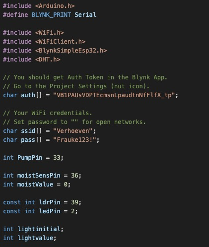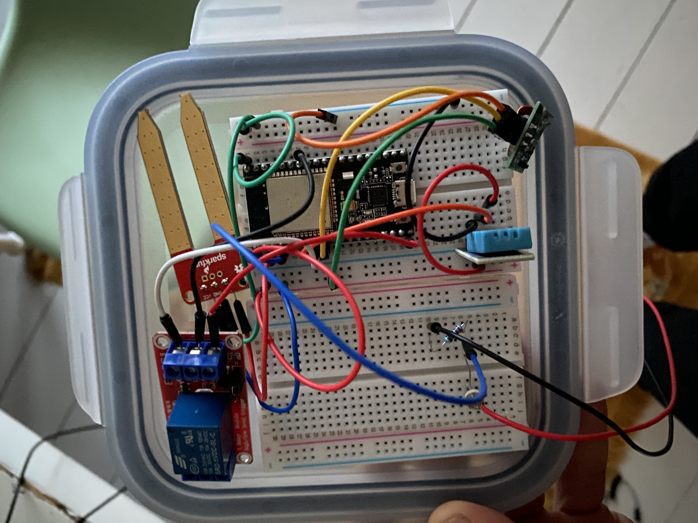
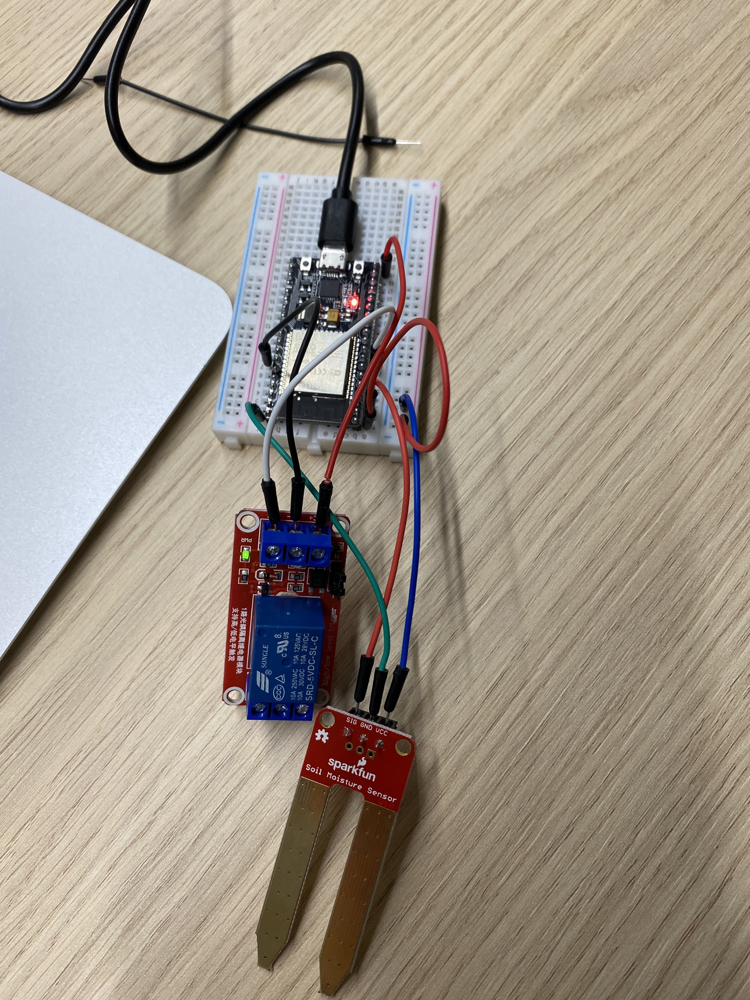
Hierbij is te zien dat verschillende functies aangestuurd worden zoals:
Door middel van de onderstaande app, genaamd Blynk, wordt de data van de schakeling inzichtelijk gemaakt.
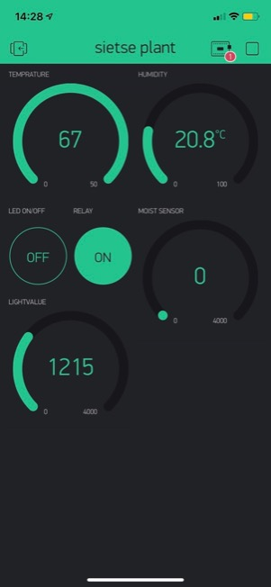Op deze manier kan inzicht verkregen worden in verschillende relevante data die belangrijk is voor de monitoring van een plant. Deze slimme data wordt gebruikt voor het bijsturen van de conditie van de plant. Zo kan bij te weinig licht op de plant een led aangezet worden, bij een te lage luchtvochtigheid water aangevuld worden, etc. Het resultaat van zo'n smart oplossing is dat de plant in de perfectie omstandigheden kan groeien.
PCB ontwerp
In het volgende proces hebben wij ons eigen PCB mogen ontwerpen die in China geproduceerd wordt. Dit is gedaan in het programma Eagle. Via verschillende library's hebben wij de functies kunnen toevoegen zoals de ESP32, ledlamp, relay, luchtvochtigheidsmeter en temperatuursmeter. Deze zijn vervolgens samengevoegd naar eigen wens in mijn PCB ontwerp. Om er zeker van te zijn dat alles goed was aangesloten, heb ik eerst via Eagle een test gedaan waarbij de mogelijke fouten worden weergeven. Daarnaast heb ik het PCB ontwerp nog laten controleren door Mathijs de Vegt, die een expert in dit vak is. Gelukkig was alles in een keer goed gegaan en daar ben ik ook trots op. Onderstaand is het ontwerp van mijn printplaat weergeven.
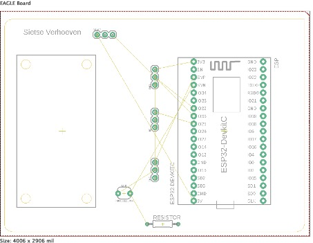
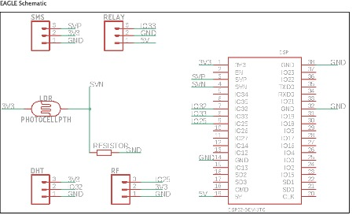
Vervolgens hebben wij de printplaatjes binnen gekregen en mochten wij onze IoT schakeling hierop gaan solderen. Helaas had ik niet de geschikte soldeerbout liggen, want het vermogen was veel te hoog voor het solderen van een printplaat. Hierdoor heb ik deze handeling niet uit kunnen voeren. Wel heb ik via Microsoft Teams bij Derk meegekeken toen hij aan het solderen was, aangezien dit mij toch interessant leek om te zien. Toch vind ik dat mijn plantbewateringssysteem goed is gelukt, omdat alle funties werken. De eerste weken waren taai, want ik had nog bijna geen achtergrond in programmeren en vaak liep ik vast. Uiteindelijk ben ik toch gemotiveerd gebleven en lukte het steeds beter. Ik wil een studiegenoot, Derk, bedanken voor het ondersteunen van mij tijdens dit onderdeel van de minor. Hij heeft mij vaak geholpen als ik vast liep tijdens het programmeren of aansluiten.
3D printing
Tijdens de laatste weken van smart technology zouden wij eigenlijk een 3D geprinte chassis moeten maken voor onze schakeling. Helaas was het door de corona pandemie niet mogelijk om fysiek samen te komen. Wel hebben wij over verschillende additive manufacturing technologieën colleges gehad. Deze waren heel interessant en het was leuk om te zien welke methodes er allemaal zijn voor verschillende doeleinden. Daarnaast hebben wij een opdracht gemaakt voor het 3D printen. Wij mochten een onderdeel kiezen wat wij gaan presenteren door middel van een interessante powerpoint.
Daarnaast heb ik vorig jaar uit interesse naar 3D printing gezocht naar nieuwe trends binnen deze productietechnologie. Dit gaat over een nieuw bedrijf op de markt dat 3D printing gebruikt voor het printen van grote metalen voorwerpen.
MX3D
MX3D brengt het 3D printen van metaal naar een hoger level. Waar 3D printen van metaal nu blijft steken op onderdelen van een geheel, zorgt MX3D ervoor dat grote metalen objecten en constructies geprint kunnen worden. Door het koppelen van wire arc additive manufacturing (WAAM) met een nieuw ontwikkelde software, wordt 3D printen van metaal flexibeler, sneller, goedkoper en mogelijk voor een heel nieuw scala aan industrieën. Wire arc additive manufacturing houdt in dat een metalen draad versmolten wordt door het te verwarmen met elektroden. Dit wordt laag op laag aangebracht, en door de koppeling met de nieuwe MX3D software kunnen grote metalen objecten volledig klant specifiek worden 3D geprint.
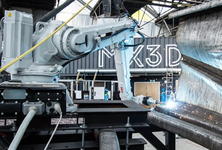
Voordelen MX3D
Nadelen MX3D
Toekomstige situatie
WAAM 3D metaal printen van de toekomst: Volledige objecten of constructies worden op locatie geprint. Hierdoor zijn er minder mensen nodig en hoeft het object niet getransporteerd worden. Door de mogelijkheid om de robotarm te verplaatsen en “outside the box” te printen, is het printen van bijvoorbeeld een volledige brug van 12 meter in de toekomst geen probleem.
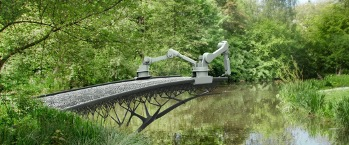
Huidige situatie
SLA 3D metaal printen van nu: kleine complexe onderdelen die deel uit maken van een groter geheel. De grootte van het onderdeel is afhankelijk van de grootte van de printplaat. In deze vorm van 3D printen wordt metaalpoeder laag voor laag verhard met een laser. Het object wordt geprint in een machine op een printplaat. Hierdoor kunnen grote metalen objecten nog niet geprint worden.
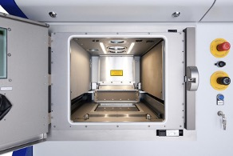
Technologische inzichten
De MXD3 software zorgt voor een constante monitoring van het gehele proces. Wanneer er fouten optreden tijdens de productie van het object worden deze kenbaar gemaakt en kan er direct ingegrepen worden. Fouten worden dus meteen gedetecteerd, wat voorkomt dat objecten na de productie moeten worden hersteld of afgekeurd. Verder meet de software allerlei variabelen die periodiek geanalyseerd kunnen worden. Uit deze analyses kunnen verbeteringen en optimalisaties volgen. Verder wordt er bij deze ontwikkeling de design tot eindproduct geregeld door één software, waardoor niks overgezet hoeft te worden.
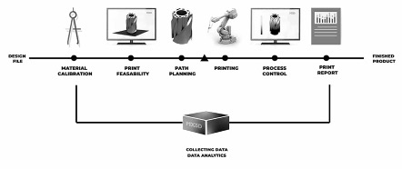
Portfolio Smart project
Projectteam
Dit project is gerealiseerd door Derk Wiegerinck, Emiel de Valk en ikzelf Sietse Verhoeven. Het team voor dit project is samengesteld op basis interesses, ambities en opleidingsachtergronden. Derk studeert embedded software development en heeft veel kennis van de technische facetten van smart industrie. Emiel studeert facility management en heeft een hele brede kennis door deze studie. Ik studeer technische bedrijskunde en heb zelf veel ervaring en kennis met het verbeteren, optimaliseren en veranderen van processen. Hierdoor kunnen wij elkaar goed aanvullen en enorm veel leren van elkaar gedurende dit project. Wij hebben afgesproken dat we proberen zoveel mogelijk nieuwe dingen te leren door elkaars taken over te nemen en niet enkel te doen waar je goed in bent. Dit heeft ons geholpen om nog meer kennis te delen en te leren van elkaar. Tot slot is besproken dat wij wekelijks een andere voorzitter, notulist en projectlid hebben en dat wij rouleren in rollen om zo nog meer te leren van verschillende rollen.
Keuze InsectSense
In de laatste 10 weken van de minor hebben wij een project mogen uitvoeren. Verschillende opdrachtgevers zijn langsgekomen om het bedrijf en de opdracht te pitchen. De opdracht die ons het meeste aansprak was de opdracht van InsectSense, een bedrijf dat bijengedrag gebruikt voor het realiseren van oplossingen ter verbetering van de mensheid. Wij vonden het enorm interessant om te horen dat bijen ziektes kunnen detecteren en zelf explosieven kunnen opsporen. Hierdoor wouden wij graag deelnemen aan deze fantastische organisatie en het project met hen aangaan. Wel lagen er verschillende uitdagingen op de loer, maar deze gaan wij graag aan. Het betreft de volgende uitdagingen:
Voor meer informatie over InsectSense kunt u deze site bezoeken: Visit InsectSense
De opdracht
De opdrachtgever heeft ons verschillende vraagstukken opgelegd die wij konnen behandelen tijdens het project. De twee meest interessante vraagstukken hebben wij gekozen, dit waren de volgende vraagstukken:
Aanpak project
Aan het begin van het project hebben wij een plan van aanpak opgesteld om afspraken en verwachtingen duidelijk te maken met de opdrachtgever. Hierin is vastgelegd wat de scope van het project is, zodat iedereen duidelijk weet wat er wel en niet gedaan wordt in het project. Ook zijn de hoofdvragen en subvragen opgesteld, waardoor wij vervolgens een planning met activiteiten hebben kunnen maken. Voor de planning en management van het project hebben wij gebruik gemaakt van de SCRUM methodiek. Wij hebben dit als zeer prettig ervaren, omdat het project opgesplitst kon worden in korte sprints van 2 weken. Het was hierdoor mogelijk om flexibel te reageren indien er nog dingen aangepast moesten worden. Ook gaf de opdrachtgever aan dat het een fijne methode was en dat het veel inzicht gaf in waar wij mee bezig waren en welke taken al afgerond waren. Onderstaand is een afbeelding weergeven van ons scrumboard. Daarnaast is ook het Plan van aanpak weergeven in een pdf file.
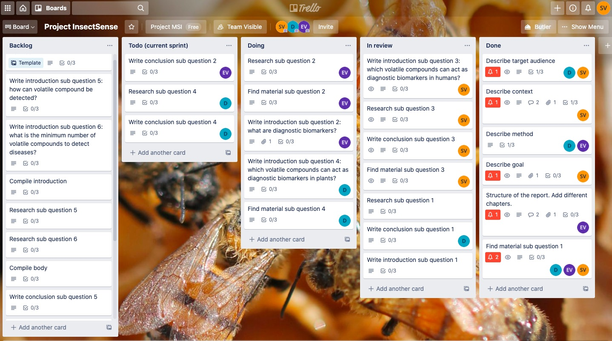
PVA
Open het plan van aanpak Plan van aanpak.
Onderzoeksrapport
Om het eerste vraagstuk te kunnen beantwoorden hebben wij onderzoek gedaan naar welke verschillende ziektes in mensen en planten gedetecteerd kunnen worden. Door maar liefst 98 wetenschappelijke artikelen te lezen zijn wij experts geworden op dit gebied en hebben wij veel kennis opgedaan. Deze kennis hebben wij omgezet in het schrijven van een eigen wetenschappelijk artikel in het Engels. In dit artikel is terug te zien dat ziektes bepaalde Volatile Organic Compounds (VOCs) vrijlaten, die gedetecteerd kunnen worden door bijen. Er zijn 33 detecteerbare ziektes gevonden bij mensen en 6 ziektes bij planten. In de onderstaande afbeelding wordt ons onderzoek in een eenvoudige manier beschreven.
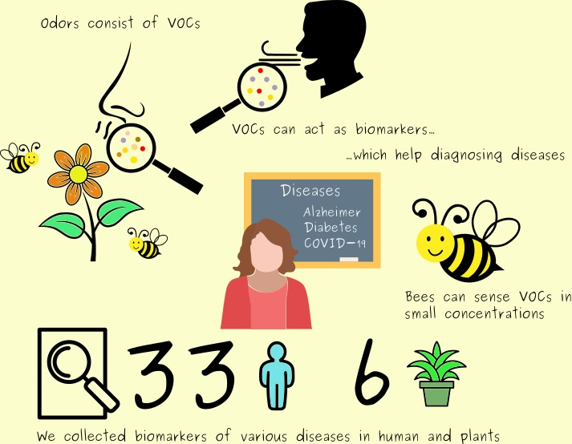
Onderzoeksrapport
Open het onderzoeksrapport Onderzoek.
Building the BeeCatcher
Introduction
One of the main goals of the project is designing and building a device to catch bees in a harmless and friendly way. Right now, catching bees is not an easy task and it takes quite some time.
The purpose of this document is describing the process of building the prototype. This will be done according to the design thinking model (figure ).
In this model, the first step is to empathize with the stakeholders to really understand the problem. Here, the main problem is that capturing bees without a designated device is a time-consuming experience. Also, it requires some skills and catching bees should be made easy.
The next phase is the define-phase. In this phase, requirements are defined and wishes of the stakeholders will be considered. These requirements are shown in the next section.
Then, the ideate-phase can start in which ideas will be generated. Afterwards, we will build the prototype. And of course at last, we will validate the prototype. These phases will happen iteratively, until the stakeholders are satisfied with the results.
Requirements
Before we can think of building the device, it is useful to know what requirements the device has to meet. The requirements are shown in figure .
First prototype
Within the ideate-phase of the design-thinking process, we searched for solutions which are already made. We found that insects used for research purposes are often caught with aspirators. This is a little device which uses a filter and small manual pump to suck insects in the filter. This is useful when you want to catch small amount of insects and little insects like ants. For bees, this is less useful. After a while, we found an article1 which described the process of building an aspirator which uses a vacuum cleaner instead of the manual pump. This was made to catch mosquitos, but we saw opportunities to use the same principles to build our prototype. We weren’t sure how the device exactly would function so we decided to validate the idea first.
A common approach for designing a user interface is creating a paper protype. Using paper, components can be easily changed and moved into other positions. For us, we just wanted to understand the device from the article more and had some empty toilet paper rolls to try it out. The first prototype is shown in figure .

Unfortunately, this wasn’t a functional prototype since the paper was too weak for the vacuum cleaner.
Second prototype
Because we still don’t have any agreements about the financial side of the prototype, we can only use materials which we can find in our homes. Since the paper was too weak, we opted for something stronger. In the end a few stronger plastic bottles (they contained unpasteurized kombucha) were used. This prototype is the first prototype that worked with the normal vacuum cleaner, but also the smaller one (kruimeldief). Since, we didn’t have a lot of materials at home, we had to make some concessions. For instance, the tube which is used for catching the bees was too small. The second prototype is shown in figure .

Third prototype
After showing the last prototypes and showing our ideas, we made agreements about the financials. So this time, we could upgrade the prototype. We used PVC like the researchers in the article, but made a few adjustments here and there. We kept the idea of the bottle as the container, because of the availability and ease of use. The third prototype is shown in figure .

Fourth prototype
This time, we upgraded the tube, so in the future bumblebees can also be caught. We also made the device portable by using the engine of the small vacuum cleaner which we bought. The fourth prototype is shown in figure .

Fifth prototype
This is an extra iteration on the last prototype the fix the battery and switch in place. We used PVC as the fixture and attached it the the body using a tube and glue. This worked suprisingly well. The prototype is shown in figure .

Testing
On 28-12-2020, we went to “Het Bijenhuis” in Wageningen to test our latest prototype. At first, the idea was to catch the bees outside in front of the hives, but the shop owner thought it would be very difficult and showed us the demonstration hive inside the shop. With the help of the demonstration hive, visitors can see the bees in action and because of its size and transparency, it was also ideal to test our prototype. The shop owner removed the bottom of the demonstration hive to create an opening for our device.
Once inserted, we started trying to catch the bees. The first attempt was not too promising. It looked like our device completely lost suction power. We couldn’t catch any bees. Fortunately, Sietse spotted that the container of the prototype (the bottle) was not fully inserted and air was leaking from the gaps. After reattaching the bottle, we tried again. This time, we succesfully could catch the bees! On the glass, where the tube of our device could completely “trap” the bees, it worked well. Attempts to catch the bees in the air sometimes worked well, but other times it looked like the suction power was to little. When the bees could grap onto something, it was impossible to catch them. The device just doesn’t have enough suction power for this.
In figure , the process of catching bees with our prototype is shown.

Conclusions
During this project, a functional BeeCatcher prototype has been delivered, which is able to catch bees in a harmless and friendly way. This prototype is made from easy to find materials and can be considered cheap to build. However, the current prototype is not robust enough. In certain situations, bees can not be succesfully caught. This is due to the weak power of the current engine.
Recommendations
Our recommendation is to find a more powerful engine, and make this engine adjustable so bees can be caught in a harmless and friendly way in all conditions.
Since the prototype is made from easy to find materials, it is not yet scalable and mass-producible. Therefore, we recommend to convert the current design to a printable design. Our current knowledge is not yet sufficient to do this by ourselves.
https://apps.dtic.mil/sti/pdfs/ADA569798.pdf↩︎
Conclusie van het project
Door ons project is InsectSense dichter bij het doel gekomen om een succesvolle formule op de markt te zetten. Uit het onderzoek zijn 34 mensen- en 6 plantenziektes naar voren gekomen die gedetecteerd kunnen worden door middel van VOCs. Met deze nieuwe inzichten kan InsectSense bij verschillende ziektes een rol gaan spelen. Er zijn 98 wetenschappelijke artikelen gebruikt die onderbouwen dat de oplossingen die onderbouwen dat de ziektes gedetecteerd kunnen worden. Dit kan InsectSense gebruiken om mogelijke klanten te overtuigen van het product. Daarnaast werden voorheen de bijen met een net gevangen of een bakje dat voor het nest gehouden moest worden, wat veel tijd in beslag nam en niet diervriendelijk was. Met onze Beecatcher kunnen bijen op een snelle, eenvoudige en diervriendelijke manier gevangen worden en hier zijn wij dan ook erg trots op. Wel zal het bedrijf een krachtigere motor in het apparaat moeten zetten om ook buiten bijen te kunnen vangen.
Resultaat van het project
Ik vind dat wij een succesvol project hebben uitgevoerd en ik ben blij met het resultaat van het onderzoek en de Beecatcher. In de laatste vergadering met de opdrachtgever hebben wij om feedback gevraagd en mochten zij een cijfer geven voor ons project. Aria gaf ons een 10 en had enkel lyrische feedback op het project en geen verbeterpunten. Leon gaf ons een 9/9,5 en was ook super lyrisch over hoe wij het onderzoek hebben aangepakt en het proces van het prototype hebben aangepakt. Ik heb enorm veel van dit project, de opdrachtgever, medestudenten en onze begeleider Pieter geleerd. Hierdoor ben ik ook trots dat ik deel heb mogen maken aan dit project.
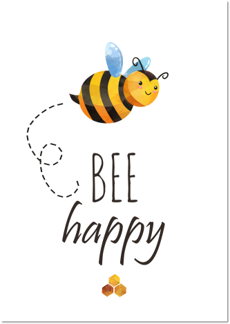